Mountain roads, historic landmarks, music cities and the unexpected moments in between.
The road ahead · September–October 2026
A JOURNEY IN CHAPTERS
The story is in the journey.
A road trip from Long Island to Houston became a chance to take the scenic route: small-town stops, changing landscapes, American history, live music and moments that could never have been planned. This is the journey, one day at a time.
CHAPTER 01 · FRIDAY, SEPTEMBER 25, 2026
The ferry, the rainbow, and the road ahead
Roslyn Harbour, Long Island → Port Jefferson → Bridgeport, Connecticut → Providence area, Rhode Island
We left Roslyn Harbour at around 4:30 in the afternoon, beginning the drive that would take us from Long Island towards Houston. Rather than head straight onto the highway, our route began with a ferry crossing: Port Jefferson to Bridgeport.
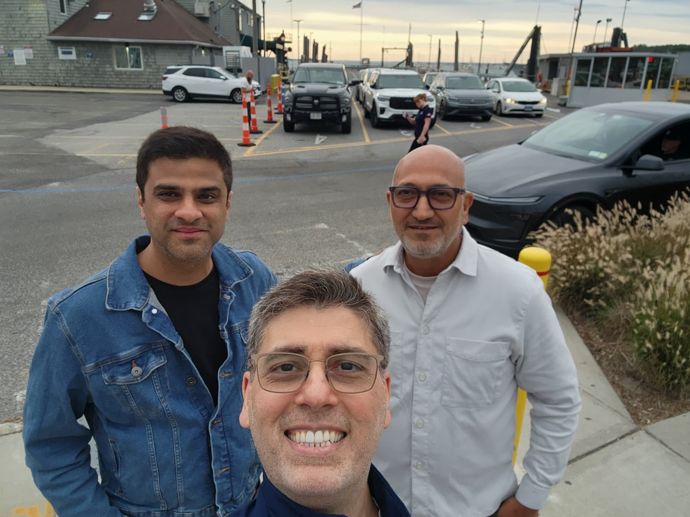
Port Jefferson, where the road trip began to take shape.
There was time for a stop at Tommy’s Place in Port Jefferson before boarding. We had drinks and some sides, then made our way to the ferry for the 6:45 p.m. departure.
A quick stop at Tommy’s Place before the crossing.
We returned to the jetty after stopping at Tommy’s Place, with enough time before the 6:45 p.m. ferry departure to take in an extraordinary sight. As we waited for the ferry, a crimson evening sky and a double rainbow turned an ordinary wait into one of the most memorable scenes of the trip. With sunset approaching, we stood there soaking in the view and taking photographs before the journey continued. It was a memorable opening to a road trip that had barely begun.
And then came the double rainbow.
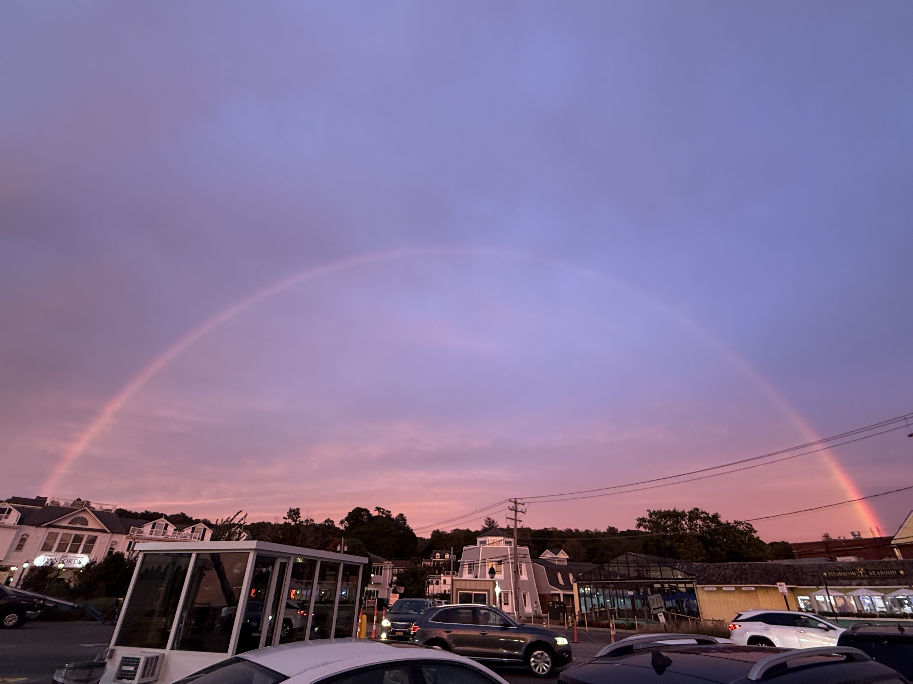
The double rainbow appeared while we were still on shore, before boarding.
Some of the best moments on a road trip are the ones you couldn't have planned.
It was a fitting way to begin a journey that would take us through unfamiliar towns, mountain roads, historic sites and music cities before reaching Texas.
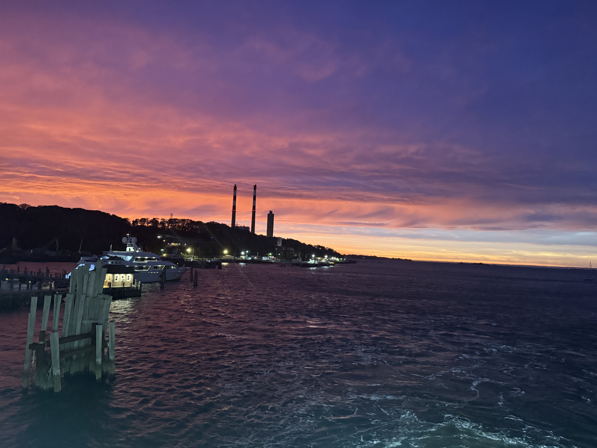
The crimson sky over Port Jefferson just before sunset.
Once we reached Bridgeport, we continued driving through Connecticut. By around 9 p.m., we had stopped for dinner at Shell & Bones Oyster Bar and Grill. From there, we drove towards the Providence area and checked in for the night at Concorde.
On board as the journey got under way.
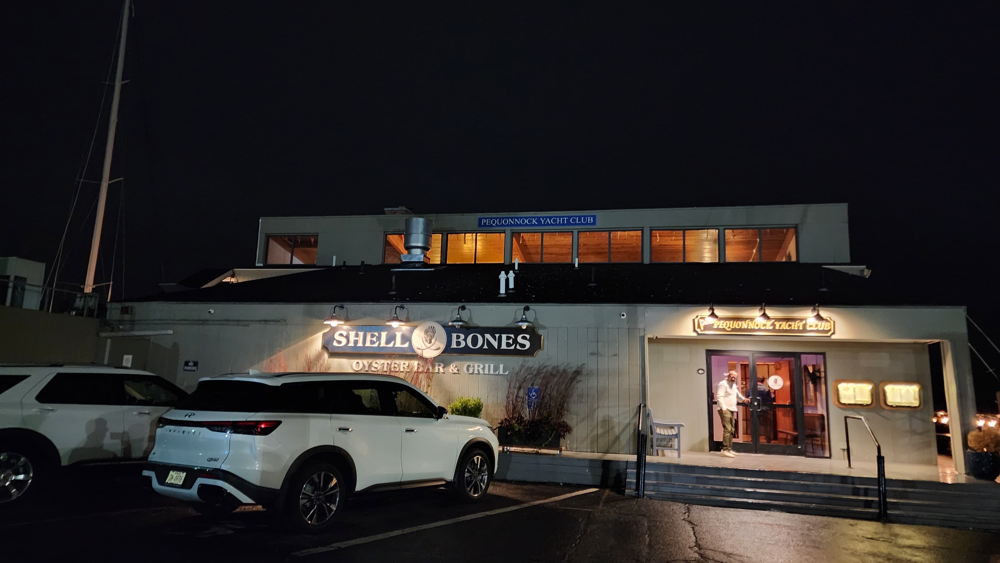
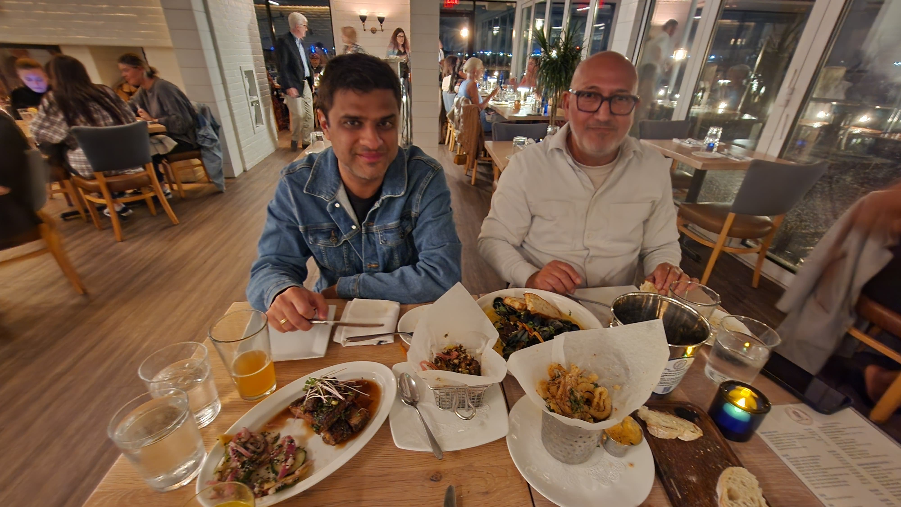
Shell & Bones Oyster Bar and Grill — our dinner stop after reaching Connecticut.
It was a short first chapter, but it established the rhythm of the journey: make progress towards the destination, certainly, but leave room for the local stops and unexpected moments along the way.
The day's route: Roslyn Harbour → Port Jefferson → ferry to Bridgeport → dinner in Connecticut → Providence area.
CHAPTER 02 · SATURDAY, SEPTEMBER 26, 2026
Boston, Harvard and the road north
Providence area, Rhode Island → Boston, Massachusetts → Colchester, Vermont
The second day took us north to Boston, where the plan was to explore some of the city’s history and character before continuing towards Vermont. After the previous evening’s drive, Boston offered a change of pace: green public spaces, historic landmarks and the unmistakable energy of a major American city.
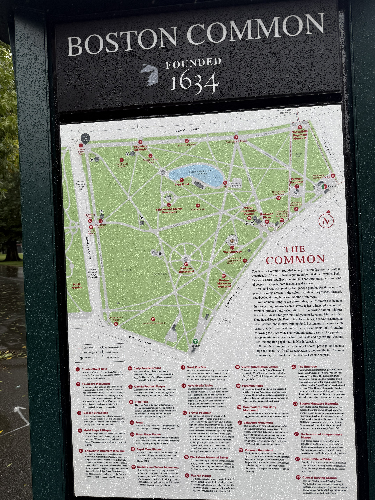
Boston: the next chapter of the journey.
Boston Common was one of the day’s central stops. Walking through this historic public park gave us a chance to slow down and take in the city beyond its roads and buildings. The surrounding area, with its monuments and civic landmarks, made the history of Boston feel close at hand. The park’s broad pathways, open lawns and mature trees offered a welcome contrast to the busy streets around it. We took our time walking through the grounds, stopping to look at the statues and memorials scattered across the park. There was a distinct sense of history here, yet the space also felt very much part of everyday Boston, with locals and visitors sharing the same paths. It was a lovely way to experience the city at a more relaxed pace. Before long, we were ready to continue exploring Boston’s other landmarks.
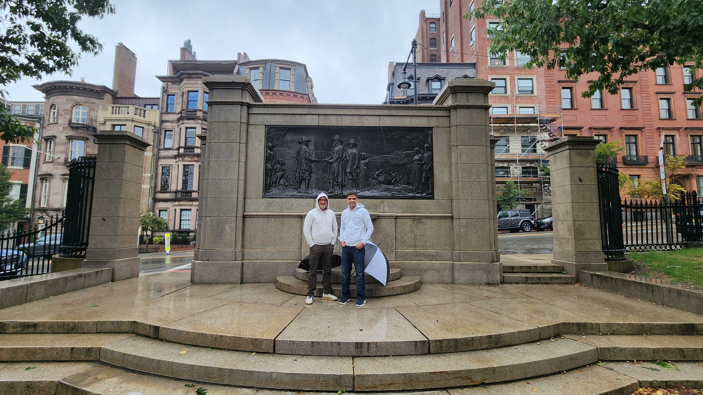
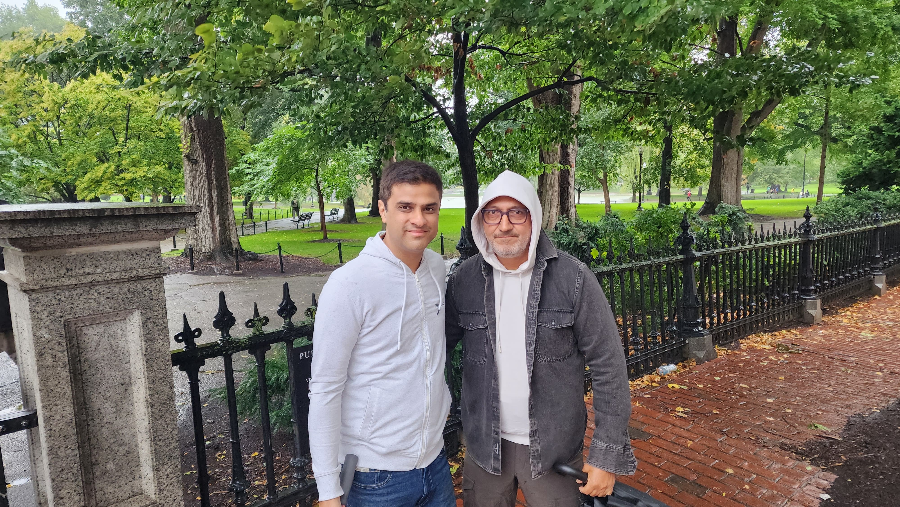
Exploring Boston Common and the historic heart of the city.
We also passed Fenway Park, the storied home of the Boston Red Sox. Even from the outside, it was a recognisable landmark and a reminder of how deeply baseball is woven into the city’s identity. Boston Harbour was another part of the city we took in along the way, much of it from the drive rather than a long stop.
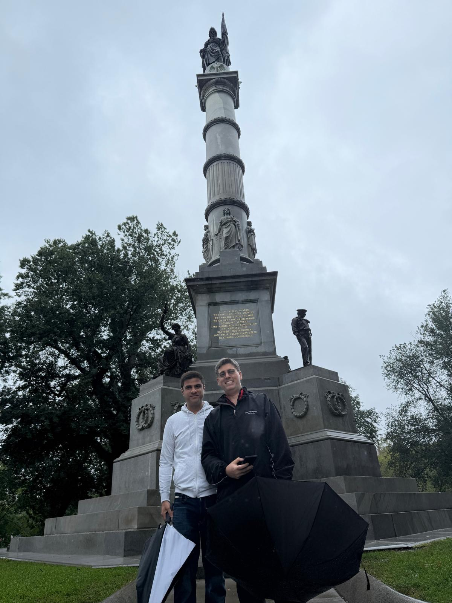
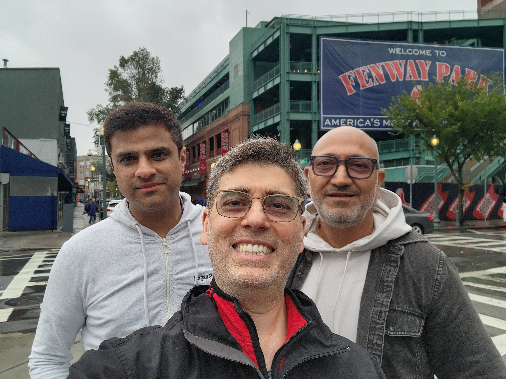
Fenway Park and Boston Harbour — memorable glimpses along the route.Harvard Square, with the university woven into the neighbourhood around it.
From Boston, we made our way to Harvard Square. The atmosphere around Harvard University was distinct: a lively mix of students, visitors, cafés and historic university buildings. We stopped for lunch at Santouka in Harvard Square, then spent time exploring the campus and its surroundings.
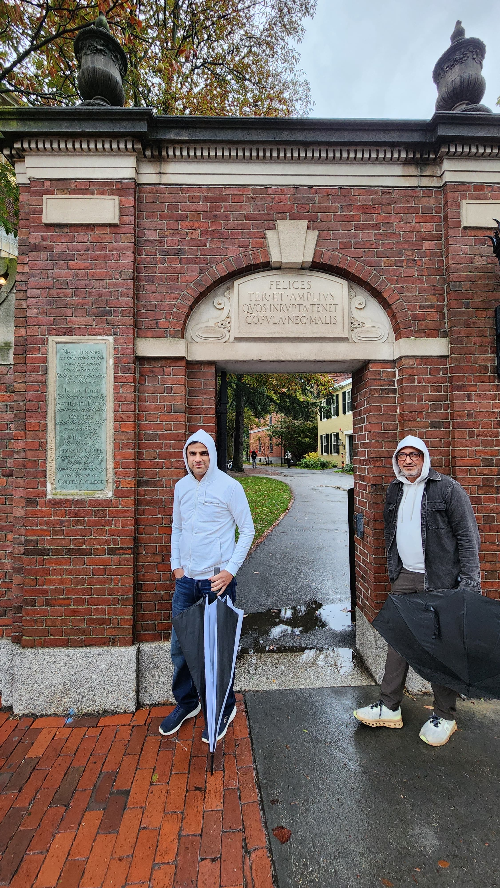
A closer look at Harvard’s campus and its historic surroundings.
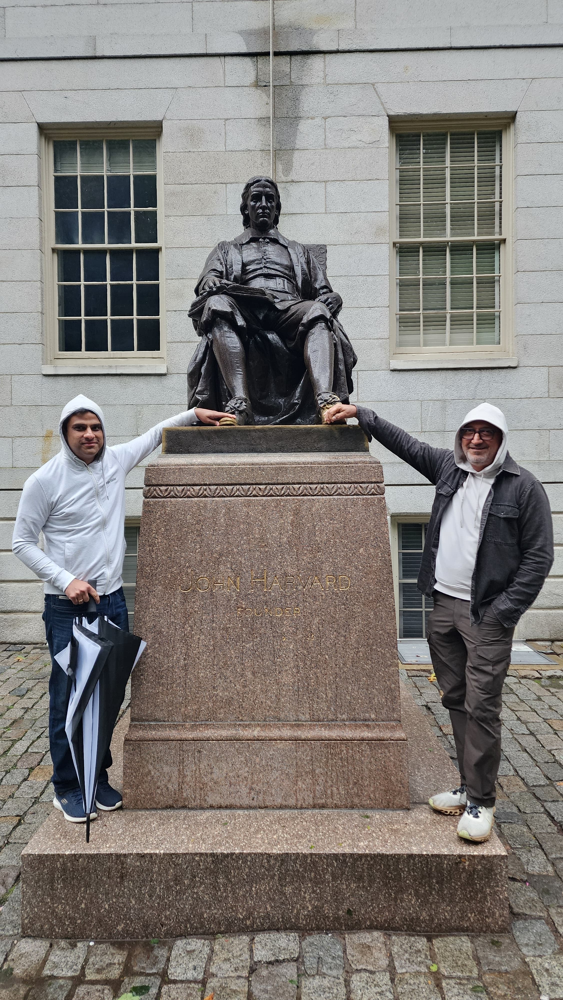
A Harvard tradition: touching the foot of the John Harvard statue.
Harvard felt like a place where history and everyday student life sat side by side. As we walked around the campus, we took in the historic buildings and the lively atmosphere of Harvard Square, with students and visitors moving between cafés and university spaces. It was a chance to experience a little of the university’s character beyond its famous name. We paused to enjoy the surroundings and take a few photographs before moving on to one of Harvard’s best-known landmarks.
One of the familiar traditions associated with Harvard is rubbing the foot of the John Harvard statue for good luck. We made sure to stop by the statue too — and the well-touched foot made the tradition easy to spot.
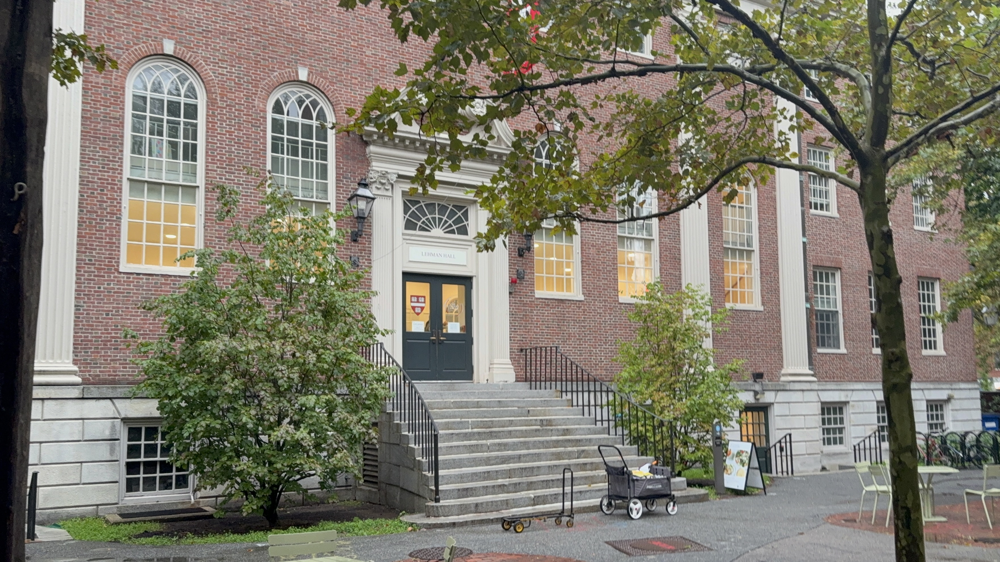
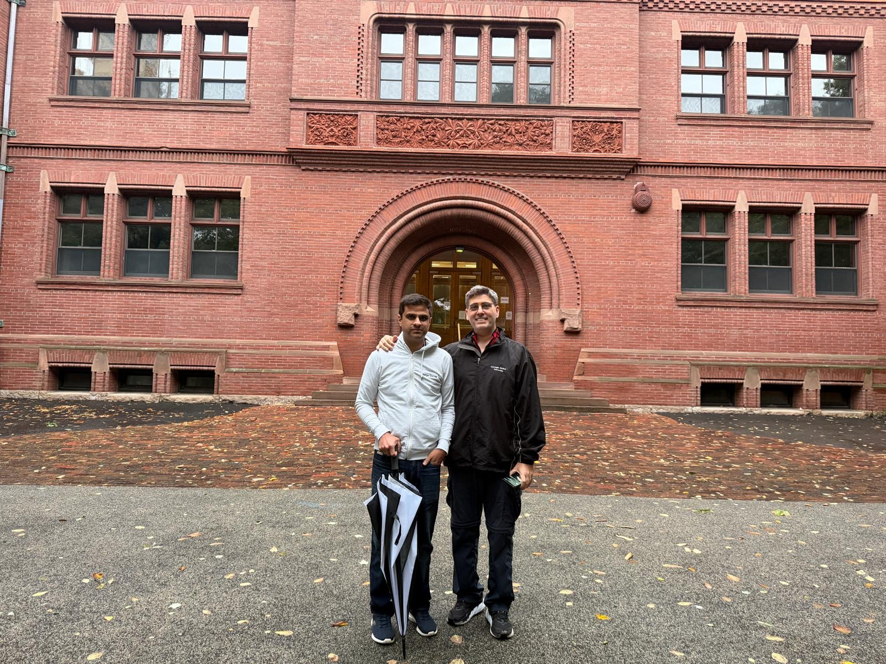
Some final snapshots before leaving the city behind.
After Boston and Harvard, we continued north towards Colchester, Vermont, rather than adding more stops to the day. The road out of the city marked a shift from urban landmarks to the landscapes and mountain roads that would define the next stretch of the trip.
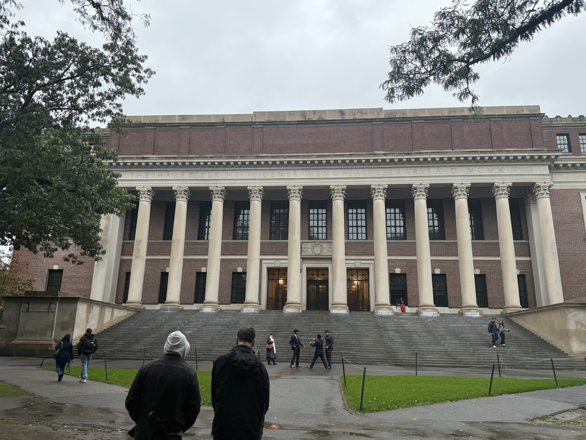
Leaving the city and heading north towards Vermont.
The day's route: Providence area → Boston Common → Fenway Park area → Boston Harbour → Harvard Square → Colchester, Vermont.
CHAPTER 03 · SUNDAY, SEPTEMBER 27, 2026
Lake Champlain, Vermont’s back roads and a scoop before closing
After Boston’s historic streets and the drive north, the third day was about discovering Vermont at a slower, more varied pace. Burlington brought us to the shores of Lake Champlain, while the surrounding countryside offered green fields, mountain roads and a few distinctly local stops. The weather was drizzly at times, and not every visit went exactly as planned, but that is part of travelling by road: adjusting as you go and enjoying the moments that do come your way.
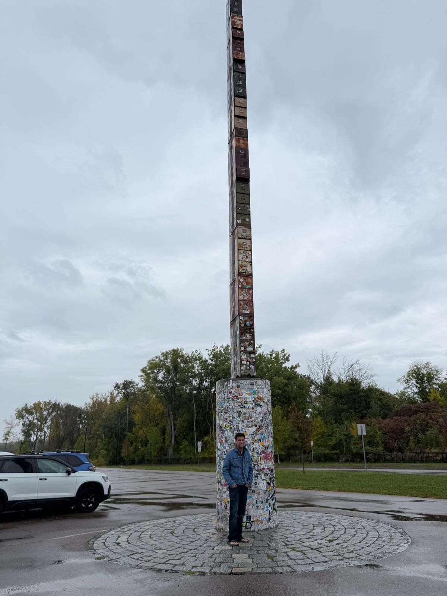
The World’s Tallest Filing Cabinet: an unexpected Burlington landmark.
One of Burlington’s more unusual sights is the World’s Tallest Filing Cabinet, a roughly 40-foot-tall piece of protest art assembled from 11 filing cabinets containing 38 drawers. It commemorates the long delays surrounding the proposed Southern Connector road project, later known as the Champlain Parkway. The concrete base has become an informal community guestbook, layered with stickers, graffiti and messages left by visitors. It was a quirky stop with a local story behind it—a reminder that even an eccentric roadside landmark can say something about the place where it stands.
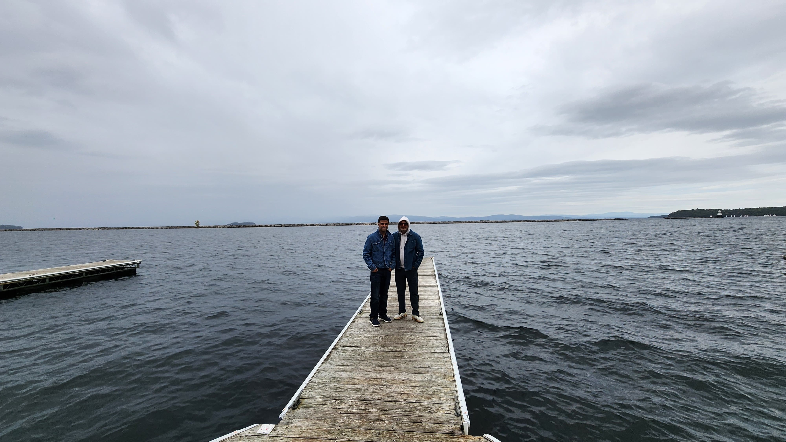
Lake Champlain, one of Burlington’s defining views.
We also spent time by Lake Champlain. The open water and broad views offered a change from the roads and city landmarks of the previous day. There was no need to turn this into a tightly scheduled sightseeing stop; simply being by the lake and taking in the landscape was part of the appeal. The waterfront gives Burlington a quieter, more open feel, with broad views across the water and the distant shoreline.
We had passed Burlington’s railway station on the way to Spot on the Dock. As we settled in for lunch by the lake, I found myself hoping a train might come by; it would be lovely to see one from there. And then, as if on cue, a train appeared. It was a small, perfectly timed bonus to the afternoon—and the moment behind the caption: finally, the train came.
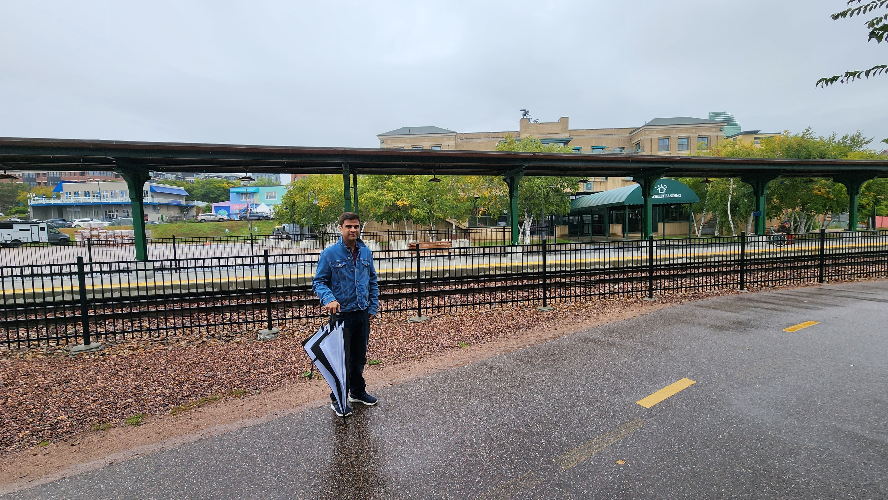
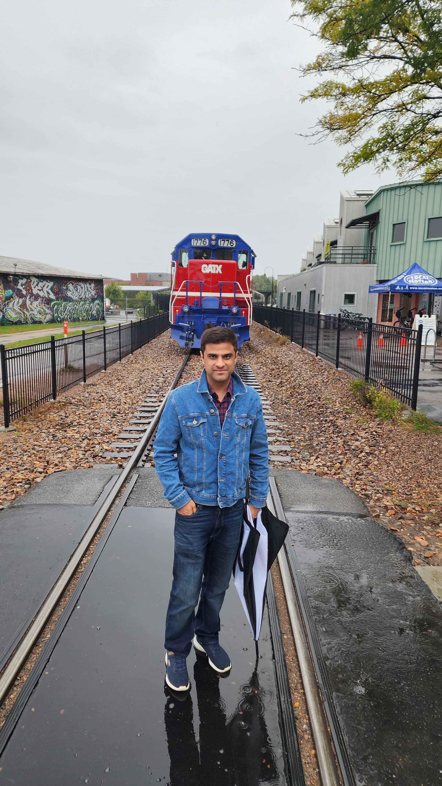
Finally, the train came.
Lunch at Spot on the Dock was a chance to enjoy Lake Champlain from right by the water. With the lake stretching out beside us, the meal felt unhurried and the setting became part of the experience. It was one of those stops where there was no need to rush on to the next destination; we could simply enjoy being there, taking in the waterfront atmosphere before getting back on the road.
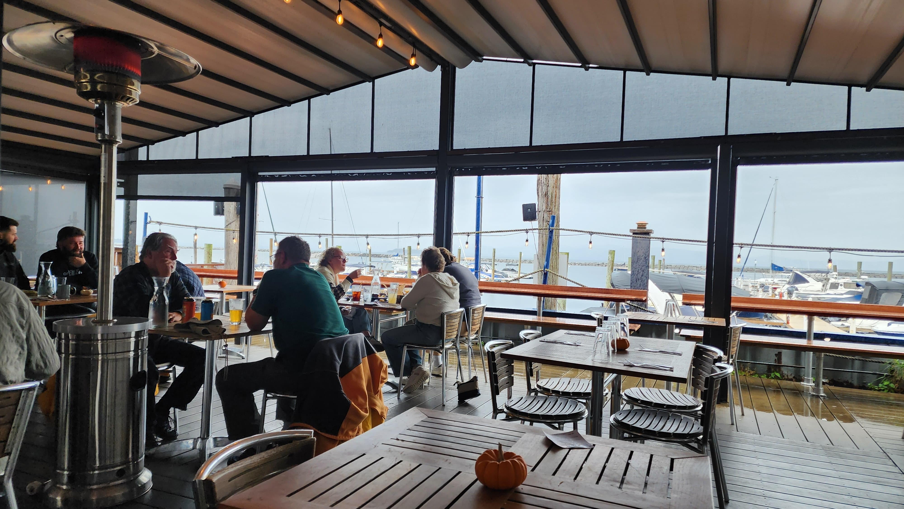
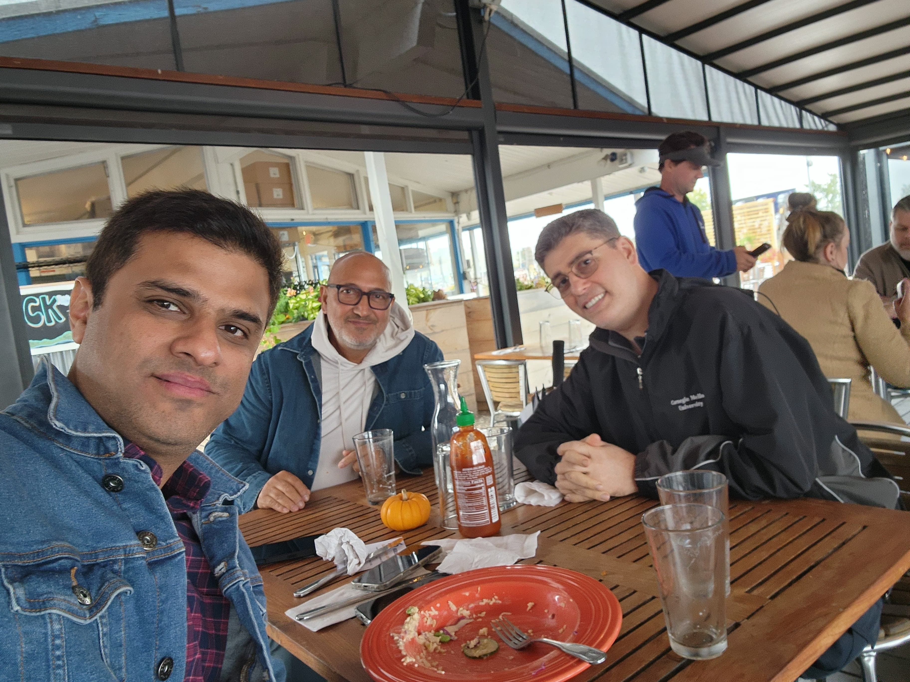
Lunch at Spot on the Dock, with Lake Champlain as the backdrop.
From Burlington, we headed to Shelburne Farms for a look at Vermont’s countryside. The tour map showed the scale of the property, and the green fields made clear why the farm is an appealing place to explore. We had hoped to tour the grounds, but a light drizzle changed the plan and we weren’t able to do the farm tour. Instead, we took in what we could from the visit and admired the landscape. It was a brief encounter rather than a full exploration, but the open fields still offered a glimpse of the quieter, pastoral side of Vermont.
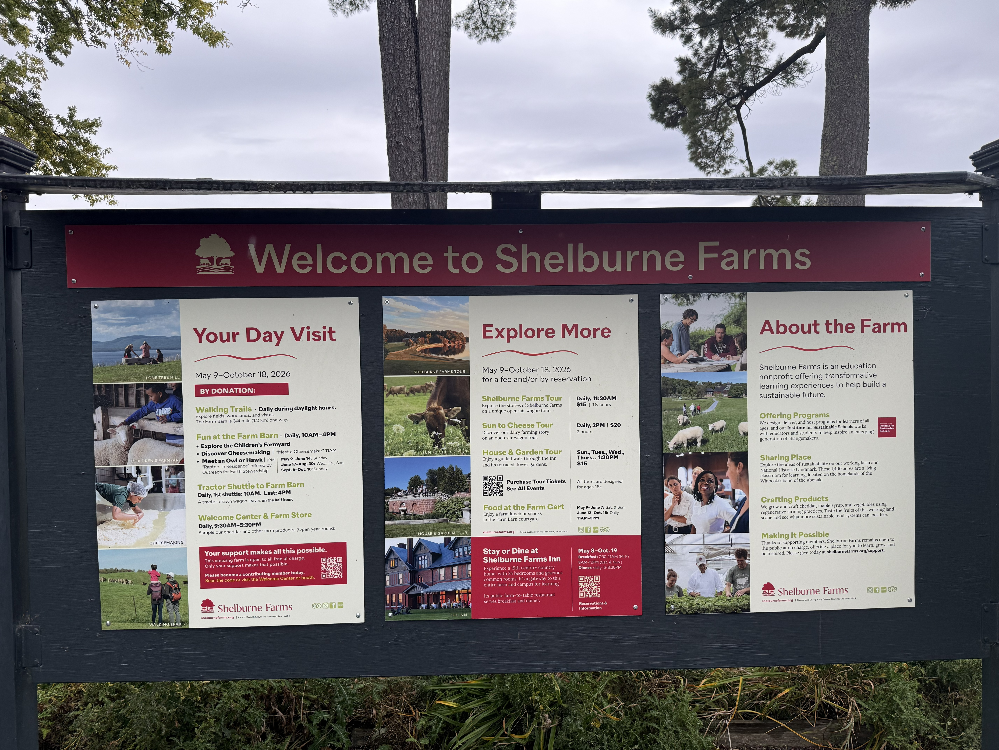
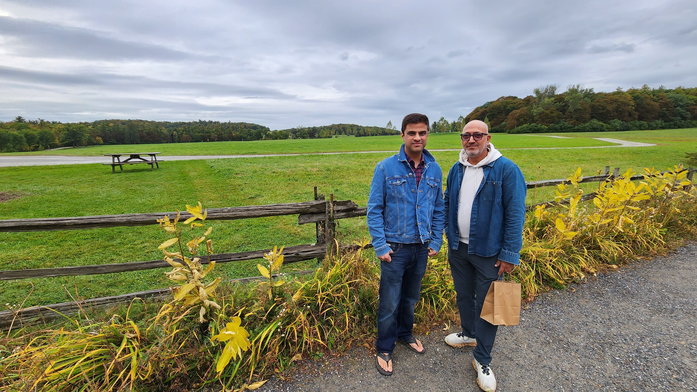
Shelburne Farms: a tour map and the green landscape, glimpsed between showers.
Back in Burlington, we made another halt on Church Street, stopping at El Gato Cantina Café. The pedestrian-friendly street was a good place to pause and soak up the city’s atmosphere rather than simply drive through. At the café, we raised a cheer and took photographs of the stop. It was an easygoing interlude between the countryside and the mountain drive, adding a little city life to a day otherwise shaped by lakeside views and open landscapes.
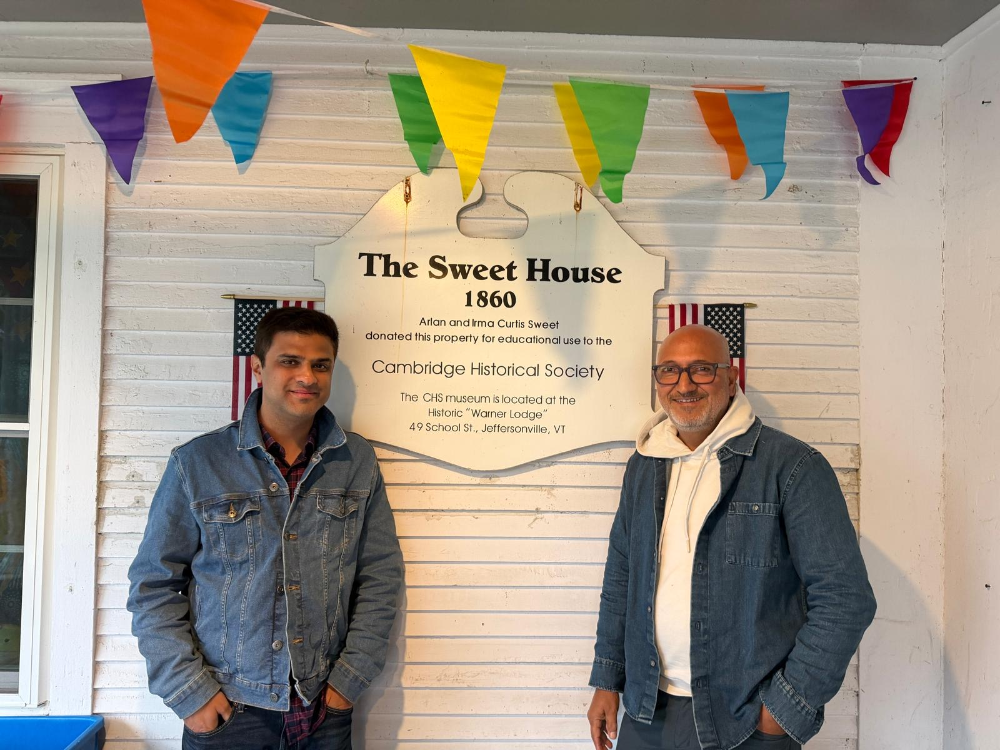
A cheerful pause at El Gato Cantina Café on Burlington’s Church Street.
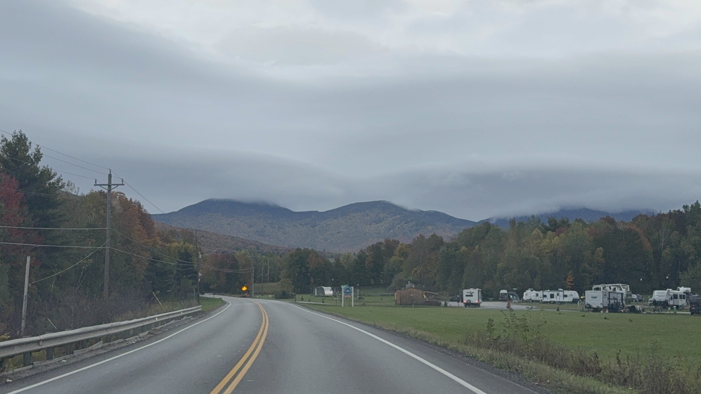
On the road through Smugglers’ Notch.
We then headed for Smugglers’ Notch, where the road itself became one of the day’s highlights. The route winds through a narrow mountain pass, with steep, forested slopes close to the road and the landscape changing around each bend. It felt a world away from Burlington’s waterfront and the open fields at Shelburne Farms. Rather than being just a connection between two stops, the drive was an experience in its own right—a scenic stretch that showed a more rugged side of Vermont.
Mountain roads like this also change the pace of a journey. You pay closer attention to the bends and the terrain, and the scenery arrives in a succession of views rather than as one broad panorama. Smugglers’ Notch was a memorable reminder that some of the best parts of a road trip are the stretches spent travelling between the places marked on the itinerary.
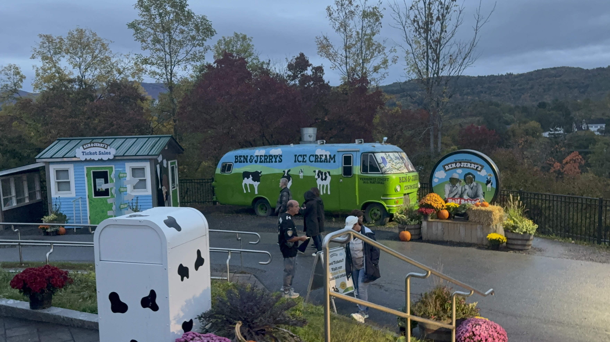
Our arrival at Ben & Jerry’s.
We rounded off the Vermont stops with a visit to the Ben & Jerry’s ice cream factory. We arrived with time running short before closing, and the factory tour had already closed for the day, so we didn’t get the full tour experience. Instead, we made the most of the time available, enjoyed some ice cream and soaked up the atmosphere.
Even without the tour, the place had a distinctive feel: clean, pristine and unmistakably devoted to ice cream. We looked around the areas accessible to us and took a few photographs, including a selfie and a stop at the photo booth. It wasn’t the complete factory visit we might have had with more time, but it was still a fun way to end the day—and getting to enjoy the ice cream itself was reason enough to be glad we stopped.
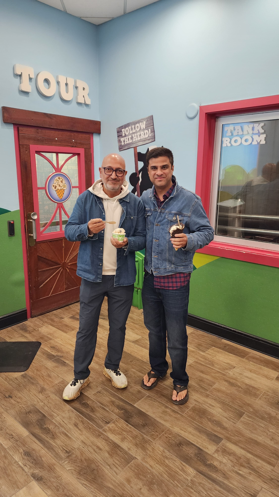
A quick look inside and a photo to remember the visit.
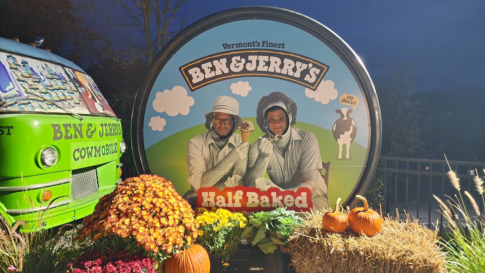
One last bit of fun at the photo booth before heading out.
Across the day, we had taken in an unusual local landmark, the shores of Lake Champlain, a passing train, a lakeside lunch, a farm visit curtailed by drizzle, a café stop on Church Street, a mountain pass and a final scoop of ice cream. Not every plan worked out exactly as intended, but each stop contributed something different to the journey. Vermont had given us a varied day, with the road itself linking together the city, the countryside and the mountains.
The day’s route: Colchester → Burlington and Lake Champlain → Spot on the Dock → Shelburne Farms → Church Street, Burlington → Smugglers’ Notch → Ben & Jerry’s.
CHAPTER 04 · MONDAY, SEPTEMBER 28, 2026
Lake George: where scenic beauty meets history
Lake George, New York
The fourth day brought us to Lake George, a place that seemed to combine everything one could hope for from a stop in upstate New York: beautiful natural scenery, a charming lakeside setting, small cafés and a surprising amount of history. Often called the Queen of American Lakes, Lake George sits at the southeastern edge of the Adirondack Mountains. Its long stretch of clear water, framed by wooded hills, makes it one of the most picturesque spots in the region.
The Queen of the Lakes
Our first impressions were all about the lake itself. The water seemed to stretch endlessly into the distance, with the Adirondack landscape providing a beautiful backdrop. There was a sense of calm about the place, a welcome change of pace after the mountain roads and longer drives of the previous days.
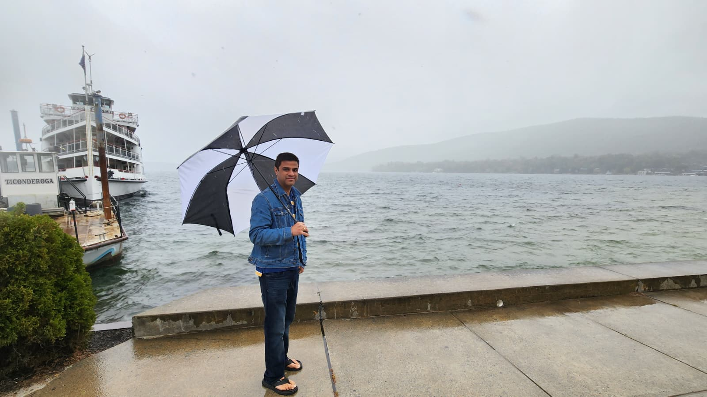
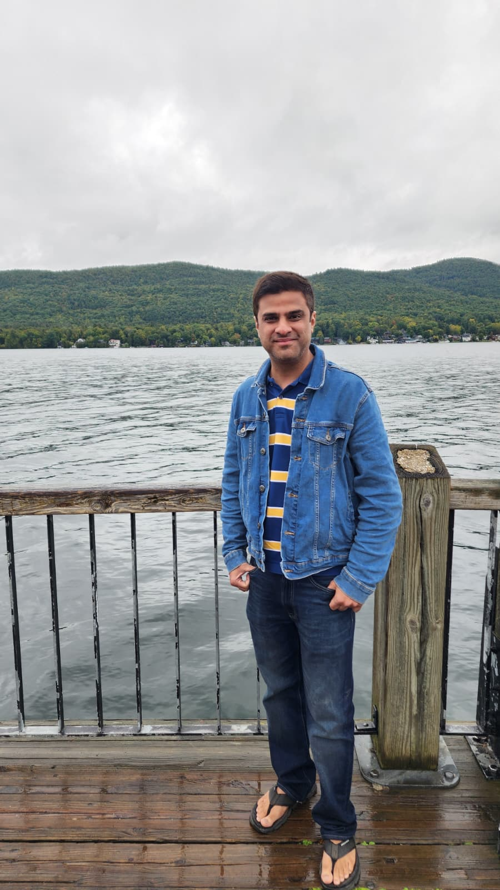
Lake George, the Queen of the Lakes, framed by the Adirondacks.
Lake George’s clear waters and setting among the Adirondacks have made it a popular destination for generations. We spent some time taking in the views and exploring the waterfront. There were little details that added to the character of the place too, including a life-sized ship anchor that made for an interesting photo opportunity. With the vast expanse of the lake behind us, it was hard not to pause and appreciate the scale and beauty of the setting.
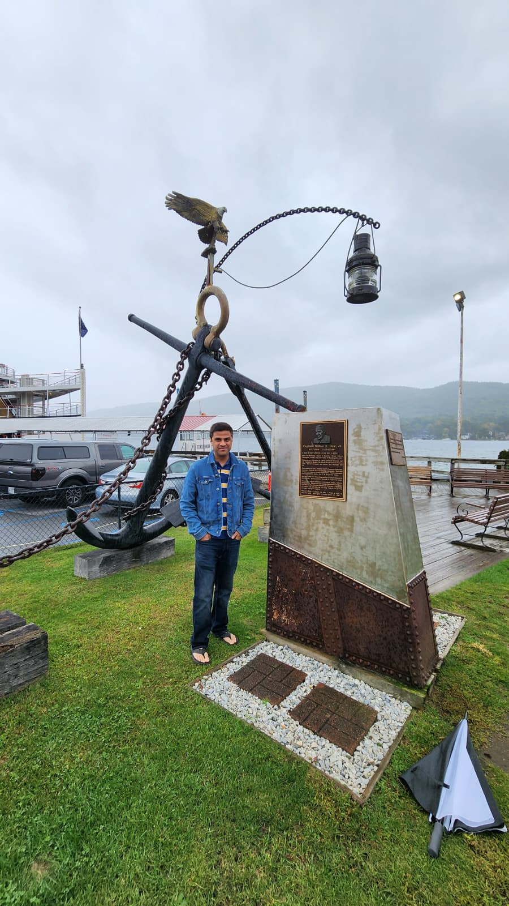
A lakeside pose with a rather substantial anchor.
The waterfront also offered a glimpse of the Adirondack cruise ship, a reminder that Lake George is best experienced from the water as well as from its shores. The sight of the vessel against the lake added to the distinctly holiday-like atmosphere of the town.
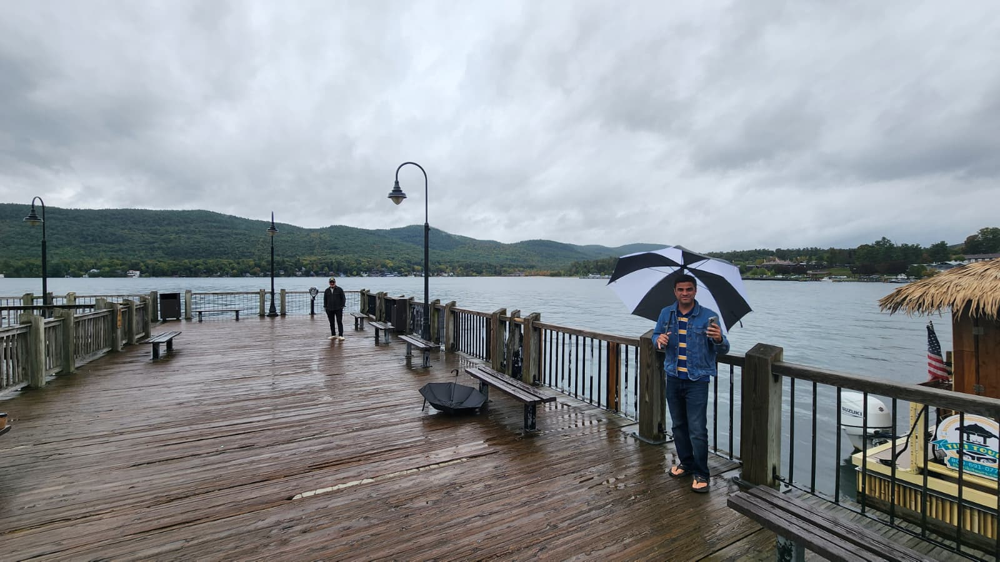
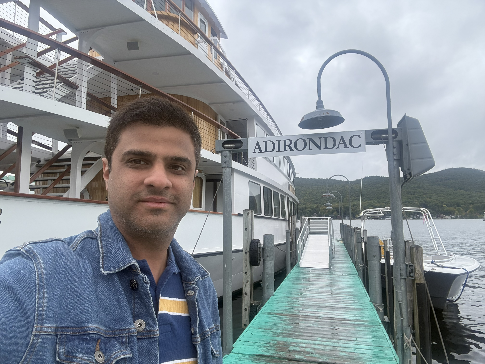
The broad lake views and the Adirondack cruise ship.
A coffee break at Café Vero
After enjoying the lake, we stopped at Café Vero for coffee. It was a lovely little find and a chance to take a break from sightseeing. The café had its own character, with a miniature coffee-brewing setup that caught our attention and added something interesting to the visit.
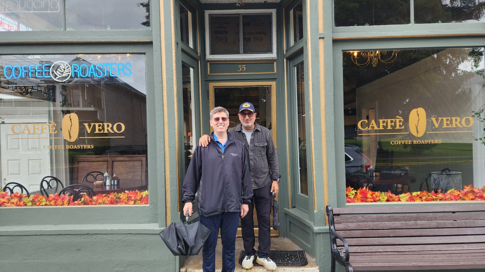
A coffee stop at Café Vero.
There is something satisfying about finding a good café while travelling. It gives you a reason to slow down, sit back and enjoy the place rather than simply move from one landmark to another. We spent some time waiting for our coffees, watching the preparation and enjoying the relaxed surroundings.
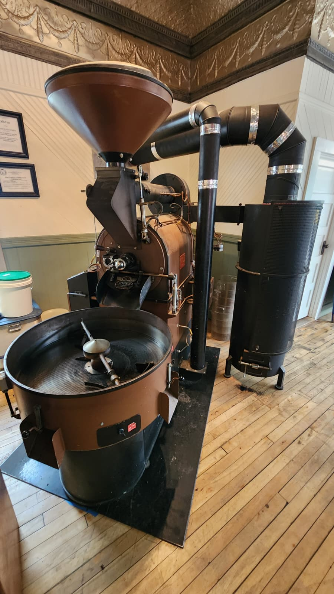
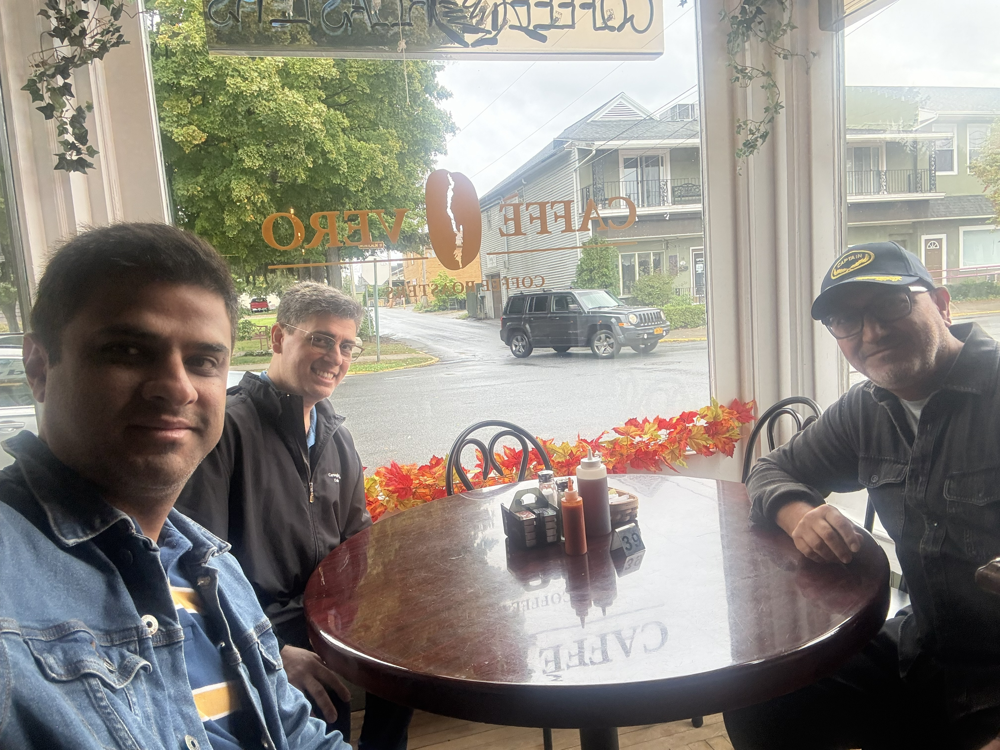
The miniature brewing setup and a little anticipation before coffee.The coffee at Café Vero.
A lake with stories from another century
What makes Lake George particularly interesting is that its importance goes well beyond its natural beauty. Long before it became a popular holiday destination, this lake and the surrounding region were strategically important during the struggle between Britain and France for control of North America.
The conflict, known as the French and Indian War, lasted from 1754 to 1763 and formed part of the wider Seven Years’ War between the two European powers. Native American nations were also involved, with different communities aligning themselves with the British or French, often in an effort to protect their own lands and way of life.
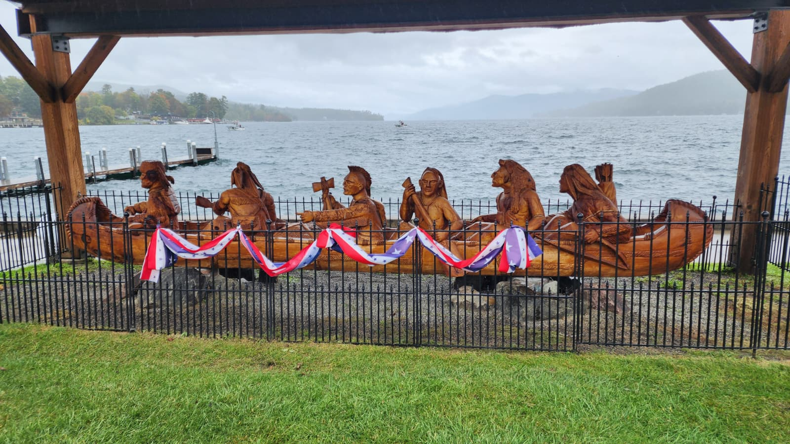
A depiction of Rogers’ Rangers and Native American allies on a scouting mission on Lake George.
One of the more intriguing reminders of that period is a depiction of Rogers’ Rangers on a scouting mission on Lake George. The scene shows the rangers alongside Native American allies of the British, travelling by canoe. It offers a glimpse into how the lake once served as a strategic route, very different from the leisurely cruises and sightseeing boats that use it today.
Fort William Henry
At the southern end of Lake George stands Fort William Henry, built by the British after the Battle of Lake George in 1755. Its location was strategic: the French had established Fort Carillon, later known as Ticonderoga, further north to guard the route towards Lake Champlain.
In 1757, French forces captured the fort after a lengthy siege. The events that followed became known as the Massacre at Fort William Henry. The conflict eventually ended with the Treaty of Paris in 1763, but its consequences extended far beyond the battlefield, contributing to tensions between Britain and its American colonies that would later lead to the American Revolution.
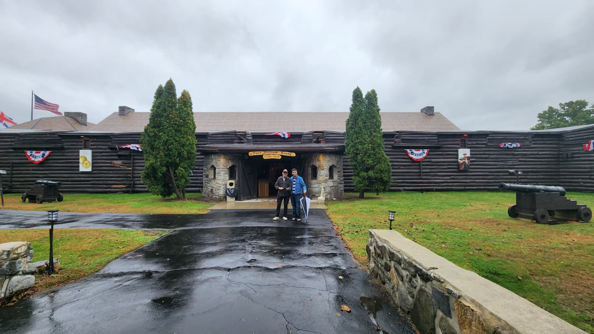
Fort William Henry, a reminder of Lake George’s pivotal role in the French and Indian War.
It was fascinating to see how a place now associated with peaceful lake views had once been at the centre of such a consequential chapter in North American history.
Lake George had given us a day that was both relaxing and unexpectedly educational. But the road still had one more surprise in store. As we continued south into Pennsylvania, we decided to make an unplanned stop in Scranton.
An unexpected detour to Scranton
For fans of The Office, Scranton needs little introduction. The city is famously featured in the opening credits of the show, and we couldn't resist making a detour to see the iconic tower that appears in them. It was a fun little moment—one of those spontaneous stops that you don't necessarily plan for, but are glad you made. Seeing a familiar landmark from a favourite television show in its actual setting gave us a small connection to the world of Dunder Mifflin!
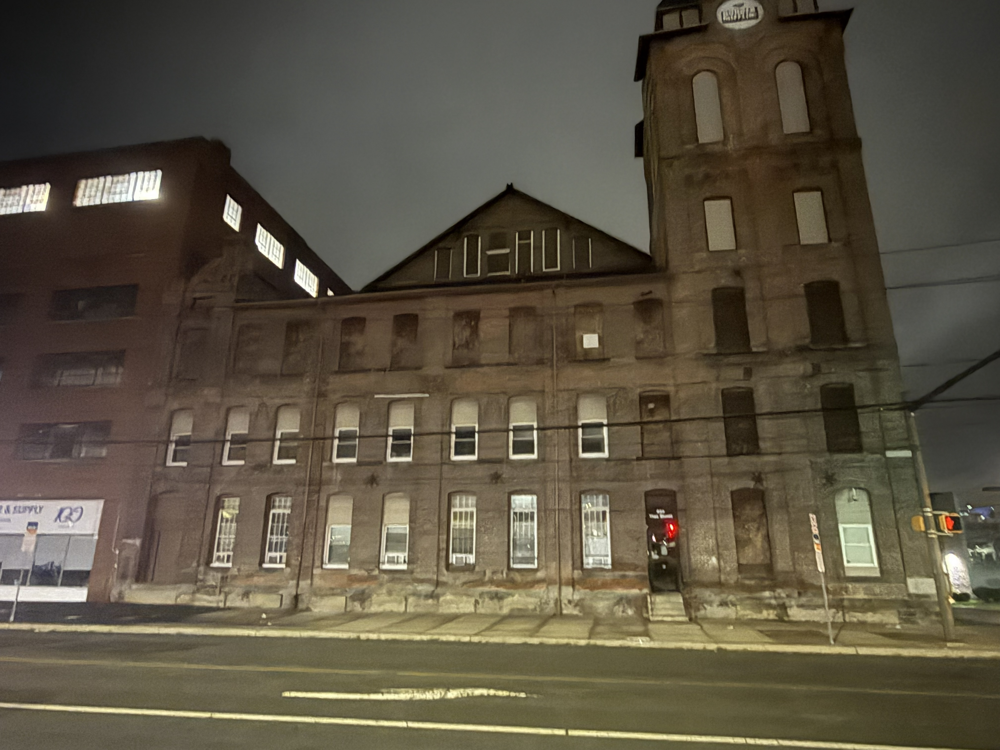
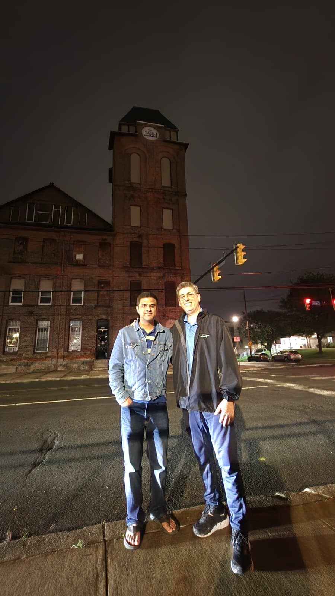
A quick Scranton detour for a familiar landmark from The Office.
With dinner time approaching, we noticed that the Backyard Ale House was just around the corner from the Office building. It seemed like a convenient place to stop, so we decided to head in for dinner rather than look any further. After a relaxed meal, we got back on the road and continued to Carlisle, Pennsylvania, where we retired for the night.
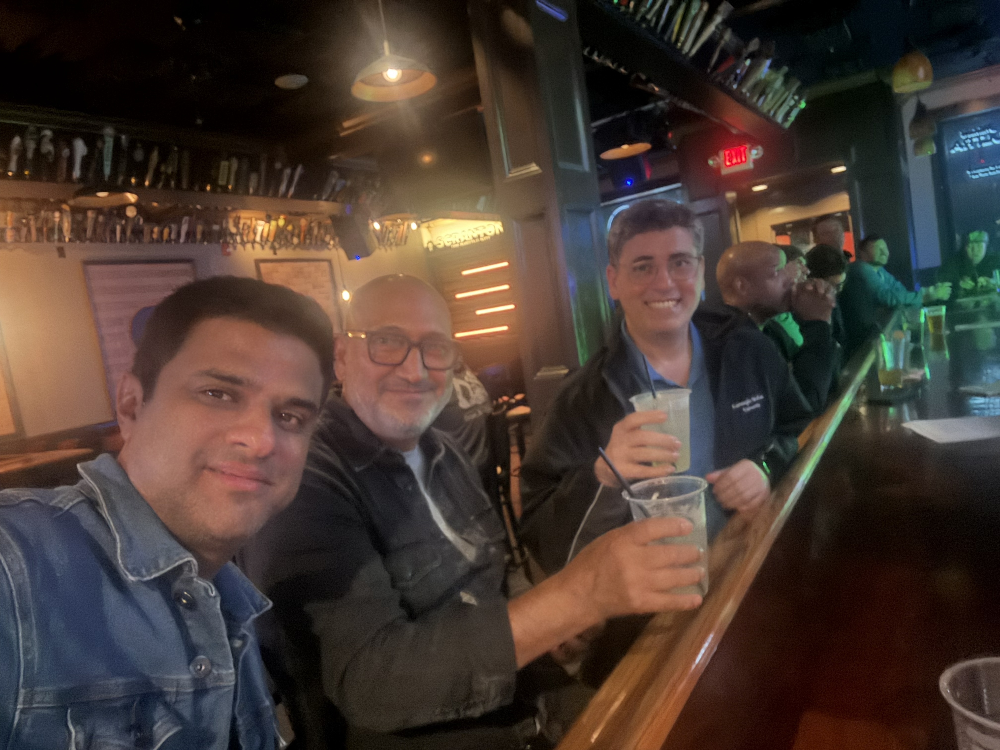
Dinner at Backyard Ale House, just around the corner from the Scranton landmark.
It was a fitting end to a day that had taken us from the tranquil shores of Lake George and its layered history to an unexpected television-inspired stop in Scranton, before bringing us to Carlisle for the night.
The day's route: Lake George, New York → Scranton, Pennsylvania (The Office tower) → Backyard Ale House, Scranton → Carlisle, Pennsylvania.
CHAPTER 05 · TUESDAY, SEPTEMBER 29, 2026
Gettysburg, Washington and the monuments of a nation
Carlisle, Pennsylvania → Gettysburg → Washington, DC → Georgetown → Fairfax, Virginia
Leaving Carlisle in the morning, we made our way to Gettysburg, one of the most significant sites of the American Civil War. The town and its surrounding countryside were the setting for the Battle of Gettysburg, fought from July 1 to 3, 1863. Today, the battlefield is preserved as a national military park, with roads winding through the landscape and memorials marking the places where Union and Confederate forces fought.
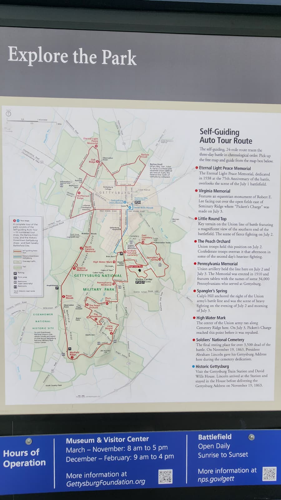
The Gettysburg battlefield tour map, setting out the places to explore across the national military park.
Our visit began with the Gettysburg Address, Abraham Lincoln’s famous speech delivered on November 19, 1863, at the dedication of the Soldiers’ National Cemetery. In a few brief words, Lincoln connected the sacrifice of those who had died with the unfinished task of preserving the nation.
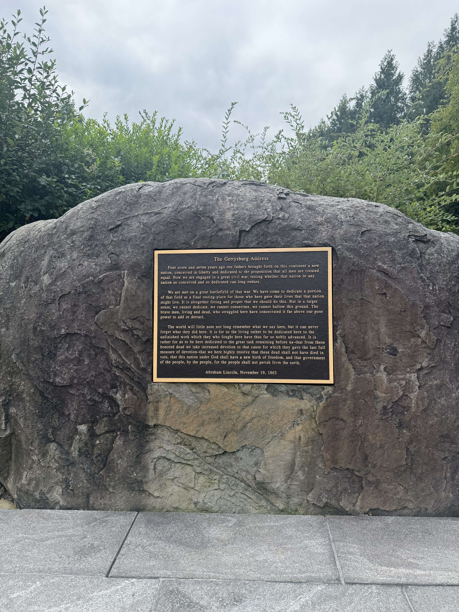
The Gettysburg Address, delivered by Abraham Lincoln in November 1863.
We also stopped at the Lincoln statue before following the touring road through the battlefield. The route passes numerous monuments, markers and memorials commemorating the units and soldiers who took part in the three days of fighting. Artillery pieces placed around the battlefield offer a tangible reminder of the weapons used in the conflict.
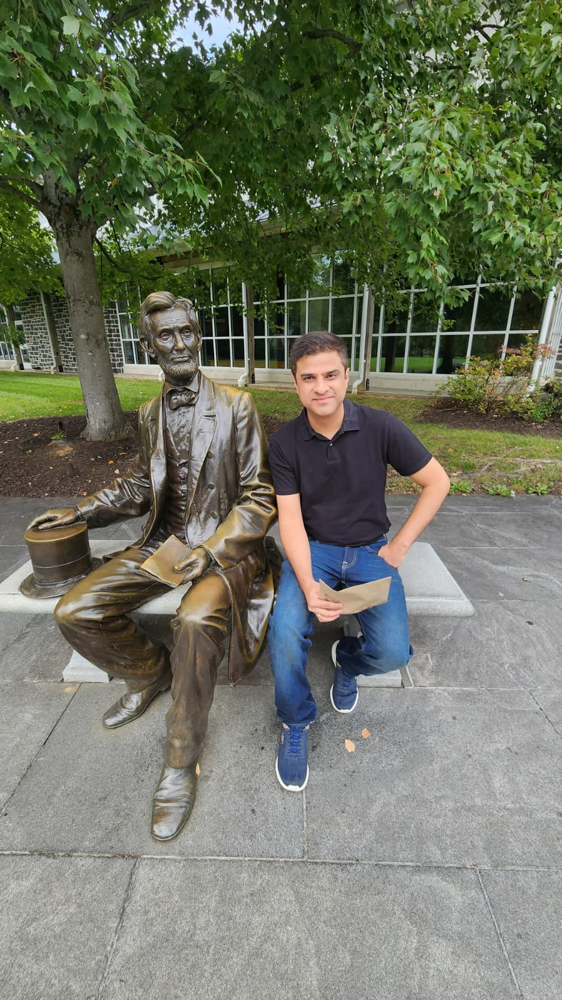
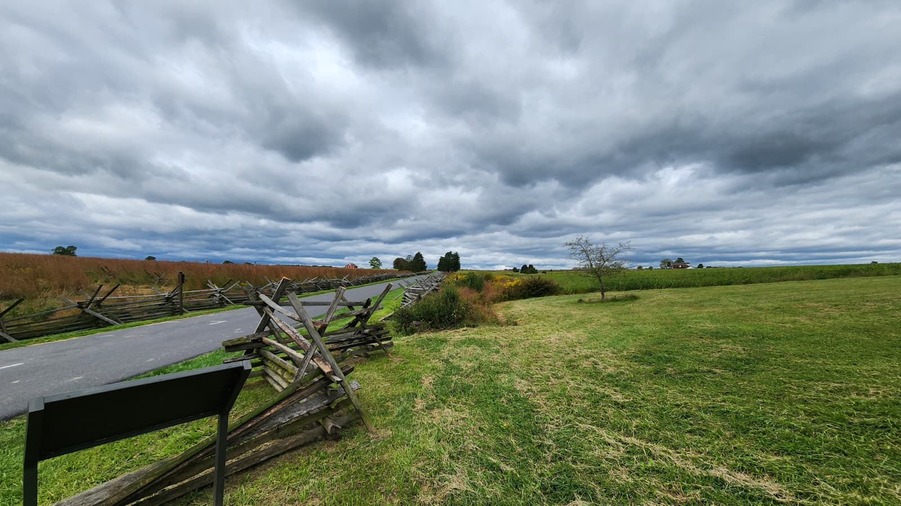
A stop by the Lincoln statue and the road through the battlefield.
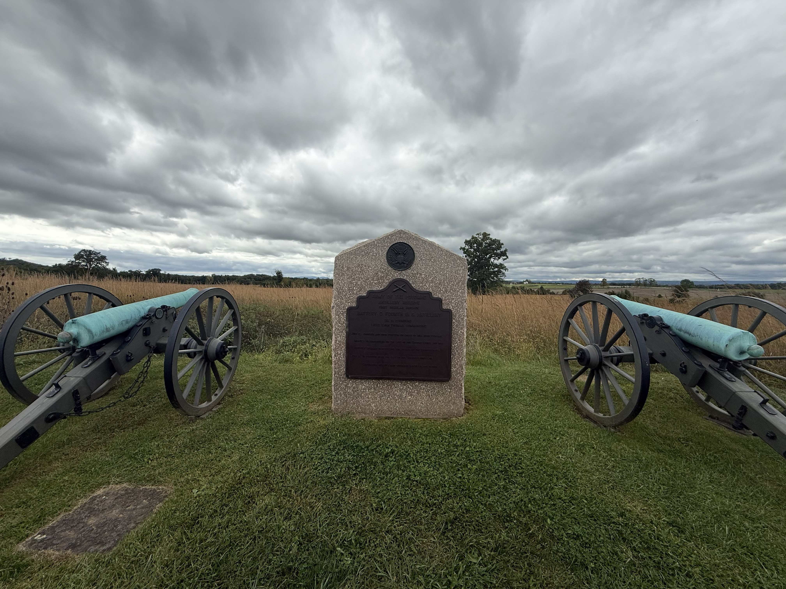
Artillery displayed along the Gettysburg battlefield.
Among the memorials were those dedicated to the forces from New York and Pennsylvania, recognising the contribution and sacrifice of troops from both states.
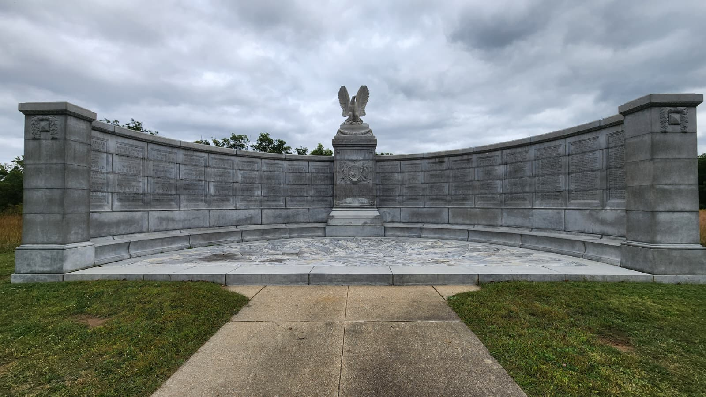
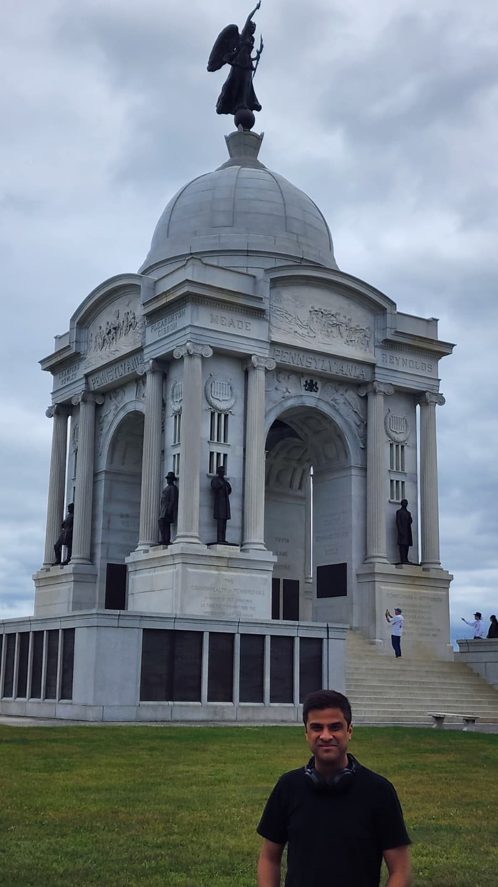
Memorials honouring the New York and Pennsylvania forces.
One of the more striking stops was the Trostle Farm. The barn still bears a visible hole made by Confederate artillery during the fighting on July 2, 1863. The damage is a stark reminder of the intensity of the battle. Captain John Bigelow’s 9th Massachusetts Battery had been ordered to hold its position at the farmyard to buy time for Union troops to occupy Cemetery Ridge. The fighting came at a terrible cost: 80 of the battery’s 88 horses were killed.
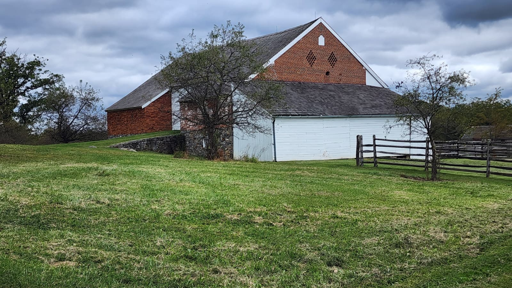
The Trostle Barn, with the artillery damage still visible.
Outside the barn, a plaque titled Unflinching Under Fire commemorates the battery’s stand. We paused to take in the site and photograph the barn itself — a quiet farm setting today, but one that witnessed extraordinary violence more than 160 years ago.
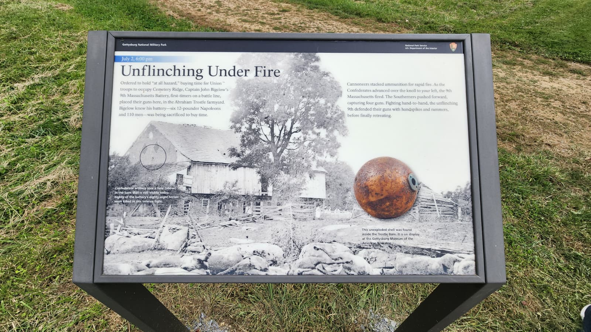
The plaque commemorating the battery’s stand, and a stop outside the barn.
We continued to Little Round Top, a rocky hill about three miles south of Gettysburg. Its summit and sweeping views made it a strategically important position during the battle. The height offered a considerable advantage to whichever army could hold it, while making an assault by the opposing side more difficult. The plaque describing it as The Little Rocky Hill explains how the landscape itself played a decisive role in the fighting.
Little Round Top and the Eye of General Warren.
Gettysburg was a memorable stop. Moving along the battlefield roads, past the memorials and historic sites, offered a glimpse into a defining chapter of American history.
Washington, DC and Georgetown
After our visit to Gettysburg, the day took a very different turn as we made our way to Washington, DC. We were moving from the history of the Civil War battlefield to the national institutions and monuments of the American capital. With a packed schedule ahead, our first stop was the Smithsonian National Air and Space Museum.
Smithsonian National Air and Space Museum
The museum was an experience in itself. Walking in and looking up, we were greeted by life-size aircraft models suspended from the ceiling. Seeing these early machines displayed overhead brought the beginnings of aviation history to life. It was fascinating to think how these early experiments in flight eventually led to the sophisticated aircraft and spacecraft that followed.
The Smithsonian National Air and Space Museum.Aircraft suspended overhead, tracing the beginnings of aviation.
The exhibits took us from flight into space exploration. We saw the Marie Curie rover and the Mars Exploration Rover, examples of the engineering that allows robotic missions to explore another planet. The Apollo 11 Command Module was another highlight: a tangible connection to the mission that first carried humans to the Moon.
Robotic explorers built to extend our reach beyond Earth.From the Apollo 11 Command Module to the Hubble Space Telescope.
From early aircraft to Mars rovers, the Apollo programme and the Hubble Space Telescope, the museum brought together milestones in the story of human exploration. It was a fascinating change of perspective after the battlefields of Gettysburg.
The monuments of Washington
We then made our way to the Washington Monument. The towering obelisk rises above the city and is one of the defining features of the capital’s skyline. It is difficult to miss, and seeing it in person gave us a sense of the scale and formality of Washington’s monumental core.
The Washington Monument rising above the capital.
Next was the World War II Memorial. Its fountain brought movement and a sense of calm to the memorial space, while the surrounding state pillars gave the site its distinctive structure. Together, they honour the Americans who served during the war and the contribution of the states and territories.
The fountain and state pillars at the World War II Memorial.
As we continued towards the Lincoln Memorial, we paused on its steps to look back towards the Washington Monument. The view, with the reflecting pool stretching between the two landmarks, is one of Washington’s most recognisable scenes.
The Washington Monument from the steps of the Lincoln Memorial.
The Lincoln Memorial itself was a powerful stop. The imposing building and the seated statue of Abraham Lincoln gave the visit particular resonance after our earlier time in Gettysburg. We had encountered Lincoln’s words at the battlefield; here, in the capital, we stood before the memorial to the president whose leadership had helped hold the Union together.
The Lincoln Memorial.Outside the World War II Memorial.
An evening in Georgetown
By evening, we had made our way to Georgetown. After a day of museums and monuments, it was time for a more relaxed stop. We went to Sovereign for drinks, enjoying a change of pace in one of Washington’s best-known neighbourhoods.
An evening stop at Sovereign in Georgetown.
We then headed to Reren, a Chinese restaurant, for dinner. After the meal, we continued towards Fairfax and visited George Mason University before heading to our overnight area.
It had been an exceptionally full day, linking the battlefields of Gettysburg with the Smithsonian’s record of aviation and space exploration, and the monuments that commemorate America’s history and its people. From a defining Civil War battlefield to the national capital, the day offered a remarkable range of perspectives on the country.
The day’s route: Carlisle → Gettysburg National Military Park → Smithsonian National Air and Space Museum → Washington Monument → World War II Memorial → Lincoln Memorial → Sovereign, Georgetown → Reren → George Mason University, Fairfax.
We set out at around 10:45 a.m., leaving the previous day’s history and monuments behind and heading south through the Appalachian mountain region. The drive was a long one, but we had a few stops planned along the way. By the time we reached Tennessee, the day would have taken us from the roots of country music to the neon-lit honky-tonks of Nashville.
Bristol — where country music found its home
“Bristol — a good place to live.” Our arrival in Bristol, Virginia.
Our first major stop was Bristol, Virginia, a town with a special place in American music history. The welcome sign made for a cheerful arrival photograph, but the real reason for stopping was the Birthplace of Country Music Museum. Bristol is closely associated with the 1927 Bristol Sessions, recordings that helped bring early country music to a much wider audience.
The Birthplace of Country Music Museum, celebrating Bristol’s place in music history.
Inside, the museum tells the story of the musicians, recordings and traditions that shaped the genre. It was an engaging introduction to the musical heritage of the region. The visit also offered a bit of fun: trying on a cowboy hat in the gift shop and posing with the large guitar outside the museum. It was hard to leave Bristol without feeling that we had encountered an important part of the story behind the music we would hear later that night in Nashville.
A cowboy hat in the gift shop and the big guitar outside — suitably musical souvenirs of Bristol.
A taste of Southern food
We also stopped at Legit’s Kitchen in Bristol, where we had our first taste of soul food in the United States. It was a welcome opportunity to try something associated with the food culture of the American South rather than simply grabbing a quick bite on the highway. The menu itself was worth a photograph, a small record of a meal that became part of the day’s experience.
Legit’s Kitchen — our first soul-food stop in the United States.
Crossing the Virginia–Tennessee state line
A few blocks from the museum, we came across the state line between Virginia and Tennessee. The boundary runs right across an ordinary road, marked by a yellow line — a simple, everyday street that also happens to divide two states. A yellow line marks the state border at road level, with Moore Street on the Virginia side and 6th Street in Tennessee. It made for a wonderfully literal state-line crossing: one moment in Virginia, and a few steps later in Tennessee.
The Virginia–Tennessee state line, marked by a yellow line running across the road.
A coffee pause in Knoxville
By the time we reached Knoxville, a coffee break was in order. We stopped at Awaken Coffee in the Old City, a relaxed pause before the final stretch to Nashville. It was good to get out of the car, enjoy a coffee and take in a little of Knoxville before getting back on the road.
A coffee stop at Awaken Coffee in Knoxville’s Old City.
Nashville — the home of country music comes alive
We finally reached Nashville at approximately 9:10 p.m. There was one place we particularly hoped to visit: the Bluebird Cafe. It has a special reputation in country music circles, and the story goes that Taylor Swift was discovered there early in her career. Unfortunately, our timing was just a little off. The show had started at 9 p.m., and by the time we arrived, we had missed the beginning. We still got to see the famous venue, but the opportunity to experience a show there would have to wait for another visit.
The Bluebird Cafe — we arrived just after the final show had begun, and the sold-out room was already under way.
Rather than call it a night, we headed towards Lower Broadway, Nashville's famous entertainment district. The street is lined with honky-tonks — bars and music venues where live country music spills out onto the street. The atmosphere was quite different from the quieter towns we had driven through earlier in the day. Neon signs, music, crowds and the energy of the city made it feel as though Nashville had a second life after sunset.
Making our way towards the honky-tonks of Lower Broadway.
Along the way, an old Scout SUV caught our attention — an unusual sight amid the crowds and bright lights. It made for another spontaneous photograph before we settled into the evening’s main stops.
An old Scout SUV, spotted amid the Lower Broadway bustle.
Robert’s Western World was one of the highlights. It had the classic honky-tonk atmosphere we had come looking for: live country music, a lively crowd and the easygoing character of a Nashville institution. We also got a photograph with one of the country music performers, making the stop even more memorable.
Robert’s Western World — live country music and a memorable photo with one of the performers.
We continued to Posty’s, another stop on Lower Broadway. The night was unfolding exactly as we had hoped: moving between music bars, discovering the character of each place and enjoying the atmosphere of a city that wears its musical identity proudly.
Another Lower Broadway stop: Posty’s.
From a rooftop, we looked back over the street and its bright signs, with the honky-tonks stretching along the strip. It was a fitting view of Nashville after dark. We eventually returned to Robert’s Western World for another round before calling it a night.
Lower Broadway from above — a street that seemed to keep going long after the night began.
By the time we finally reached our downtown hotel, it was around 2:30 a.m. It had been a long day on the road, but Nashville had given us an energetic finish: Southern food, a little music history, a memorable state-line crossing and an evening immersed in live country music.
The day’s route: Carlisle area → Bristol, Virginia (Birthplace of Country Music Museum and Legit’s Kitchen) → Virginia–Tennessee state line → Awaken Coffee, Knoxville → Bluebird Cafe → Lower Broadway, Nashville (Robert’s Western World and Posty’s) → downtown Nashville.
CHAPTER 07 · THURSDAY, OCTOBER 1, 2026
The Mother Church of Country Music, and the story of Jack Daniel's
Nashville → Lynchburg, Tennessee → Memphis
After a late night exploring Nashville, we started the next day at a more relaxed pace, leaving the hotel at around 11 a.m. Our first destination was the legendary Ryman Auditorium, followed by a drive to Lynchburg to visit the Jack Daniel's Distillery. It was going to be a day connecting two very different parts of Tennessee's cultural heritage — country music and whiskey-making.
The Ryman Auditorium — The Mother Church of Country Music
Our first stop was the Ryman Auditorium, one of the most celebrated venues in American music. Often referred to as the Mother Church of Country Music, this historic building has hosted generations of musicians and performers across genres.
The Ryman Auditorium, one of Nashville's most celebrated music venues.
Outside, a plaque commemorates the venue's remarkable musical legacy. Its list of performers includes names such as Hank Williams, B.B. King and Elvis Presley, alongside Bob Dylan, Aretha Franklin, Bruce Springsteen and R.E.M. The range of artists reflects how the Ryman's influence has extended well beyond country music.
The plaque celebrating the Ryman's remarkable musical legacy.
The statues outside offered another glimpse into the history of the venue. We stopped by the statue of Bill Monroe, widely associated with the emergence of bluegrass music, and the statue of Loretta Lynn, one of country music's most celebrated voices. The accompanying plaques describe the evolution of bluegrass and the Ryman's journey towards becoming an iconic home of country music.
Remembering two influential figures in country music.
Inside, we had the opportunity to see the famous auditorium and its distinctive seating arrangement. We also watched a presentation about the venue's history, which brought its musical legacy to life.
Inside the famous auditorium.
One particularly interesting exhibit was a hat worn by Clint Eastwood during the filming of Honkytonk Man in 1982. The film was shot at the Ryman, adding another connection between the venue, Hollywood and traditional country music. The Ryman's association with the Grand Ole Opry also makes it an important part of Nashville's musical story.
Clint Eastwood's hat from Honkytonk Man, filmed at the Ryman in 1982.
After spending time exploring the auditorium and its exhibits, we picked up a few souvenirs and memorabilia before heading towards Lynchburg.
Lynchburg — A small town with a worldwide name
Our next destination was Lynchburg, home to the Jack Daniel's Distillery. We reached the town at approximately 1:45 p.m. and had a pre-booked distillery tour.
Arriving at the Jack Daniel's Distillery in Lynchburg.
The guided tour lasted approximately two hours. Our guide introduced us to the history of the distillery, the story of Jack Daniel himself and the craftsmanship behind the whiskey. As we explored the grounds, we learnt about the natural spring water, the charcoal-mellowing process and the journey from grain to finished whiskey.
The guide also shared some fascinating stories — from the mystery behind the famous Old No. 7 label to Jack's association with Nearest Green, who played an important role in teaching him the art of distilling. It made the visit much more than a tour of a famous whiskey brand; it offered a glimpse into the people, traditions and stories that shaped the place.
The stories behind Old No. 7
One of the most recognisable features of Jack Daniel's is its Old No. 7 label. Yet the origin of the number remains a mystery. The distillery display describes several theories: it may have been Jack's lucky number, the result of seven attempts to perfect the mash recipe, or a reference to seven barrels that had once gone missing and were later found. Another story suggests that a merchant who liked the whiskey asked for more of the batch marked No. 7.
The display notes that Jack gave this special designation to his finest whiskey in 1887, but never explained why he chose the number. The uncertainty has become part of the brand's enduring identity.
The mystery of Old No. 7 and the distinctive style of Jack Daniel.
Jack Daniel and Nearest Green — The people behind the distillery
One of the more meaningful parts of the tour was learning about Nearest Green and his contribution to Jack Daniel's early distilling journey. As our guide explained, Jack eventually went to work and live at the farm of Reverend Dan Hall, where he encountered the Reverend's whiskey still. Before the Civil War and emancipation, the still was under the day-to-day care of an enslaved man named Nearest.
The guide described how Nearest taught Jack the art of distilling, including the charcoal-mellowing technique. Jack later saved enough money to buy the still and begin making his own whiskey. He subsequently hired Nearest as his first head distiller, and the two worked together for many years. We also learnt that Jack did not move the operation to the distillery's present location until the late 1880s, when he was looking for a suitable source of water. It was a reminder that the story of Jack Daniel's was shaped not by one person alone, but by the knowledge and contribution of people who worked alongside him.
The spring cavern, where our guide shared the story of Jack Daniel and Nearest Green.
The spring water — An essential part of the whiskey
The natural spring is central to the distillery's identity. Our guide explained that the water remains at approximately 56°F (13°C) throughout the year and is naturally iron-free. Iron would affect the whiskey's taste and appearance, while the surrounding Tennessee limestone helps filter the water and add minerals. The distillery continues to use this spring water in its whiskey production. Seeing the source made it easier to understand why the location itself is such an important part of the process.
The spring and its water, an essential part of the distillery.
From grain to whiskey — The making of Jack Daniel's
The tour also took us through the broad stages of whiskey production. The process begins with milling and mashing, where grains are ground and mixed with water. The grain recipe includes corn, rye and malted barley. Yeast is then added to the mash to ferment the sugars into alcohol. The resulting liquid is distilled using copper equipment. Before being placed into oak barrels for maturation, the whiskey is mellowed through charcoal — a process that is a defining feature of Tennessee whiskey.
The early stages of the whiskey-making process.Charcoal mellowing and the oak barrels used in maturation.
The charcoal-mellowing process was another important part of the story. Our guide explained its connection to the distillery's history and Nearest Green's contribution to the technique. We also saw the charcoal production hut, where this distinctive part of the whiskey-making process begins.
Jack's office — A glimpse into the man himself
The tour included a visit to Jack Daniel's original office, where a wooden table has been preserved. Another display showed containers of corn, barley and rye placed on top of wooden barrels, alongside a motto that captures the distillery's approach to its craft: “Every day we make it, we'll make the best we can.”
Inside Jack Daniel's office, with a motto that still reflects the distillery's approach.
The office also contained a heavy iron safe associated with one of the most famous stories about Jack Daniel. According to the tale shared at the distillery, Jack once arrived at work before his nephew and assistant, Lem Motlow, but could not remember the safe's combination. Frustrated, he kicked the safe and injured his toe. The story goes that the injury eventually developed into a severe infection, leading to the amputation of his leg. Whether every detail of the story is exactly as told or has grown through retelling, it has become part of the folklore surrounding Jack Daniel and the distillery.
The iron safe at the centre of a well-known Jack Daniel story.
Around the distillery
Beyond the guided tour, we spent some additional time exploring the property. We saw the production area, the display truck and the gift store, and took a few photographs along the way.
The production site and a display truck on the distillery grounds.A look inside the Jack Daniel's gift store.
There was also an oversized Jack Daniel's chair, which made for a fun photo opportunity. We posed beside the barrel truck as well, including a group photograph to remember the visit. We also saw Mason's Hall from the outside during our time in Lynchburg.
A couple of lighter moments before leaving Lynchburg.A group photograph beside the barrel truck.
Onwards to Memphis
By the time we had completed the tour and explored the grounds, we had spent around three and a half hours at the distillery. It was time to continue west towards Memphis. The drive took us through Tennessee and brought us to the city at approximately 11 p.m.
It had been a day of two very different experiences: the musical history of the Ryman Auditorium in Nashville, followed by the people, stories and craftsmanship behind one of Tennessee's best-known whiskey brands in Lynchburg. Memphis was our next destination — a city closely associated with Elvis Presley, the blues and the musical heritage of the American South. We arrived late, but the following day would give us an opportunity to explore it.
There are streets you visit, and then there are streets whose history you can almost hear. Beale Street is one of the latter.
Our Memphis exploration began at one of America's most celebrated musical landmarks — Beale Street, famously known as the Home of the Blues. The weather wasn't particularly welcoming when we arrived. A steady rain had left the streets glistening, the skies were overcast, and the familiar neon signs reflected off the wet pavements. But somehow, the atmosphere seemed perfectly suited to a place whose story is steeped in music, culture and history.
Beale Street — a street whose history is inseparable from the blues.
The iconic blue “Home of the Blues — Beale Street” archway welcomed us into a neighbourhood that has played an extraordinary role in shaping American music. Naturally, we had to stop for a photograph beneath the sign.
The famous “Home of the Blues” archway — our first glimpse of Beale Street.A photograph beneath the archway with Sid and Asheesh — a memory from our rainy Memphis morning.
More than just a street
Beale Street's story goes back to the 1840s, when it began as a road serving the growing community of South Memphis. By the 1850s, it had developed into an important commercial thoroughfare, attracting merchants, entrepreneurs and immigrants.
Its cultural significance grew as Memphis became an important centre of African-American life. By the early 1920s, Beale Street had become the heart of Black Memphis and the Mid-South — a thriving community of musicians, businessmen, entertainers, journalists and entrepreneurs.
It was here that W.C. Handy, often remembered as the Father of the Blues, helped bring blues music to a wider audience through his compositions and publications. The street became a meeting ground for musical traditions, helping shape the blues that travelled far beyond Memphis. Its legacy is also associated with legendary musicians such as B.B. King, whose music carried the Memphis blues tradition to audiences around the world.
A street that found its rhythm
Walking along Beale Street, we passed colourful storefronts, music shops, bars and historic buildings. The famous neon signs, including the distinctive multicoloured “Memphis Music” sign, were reminders that music remains central to the street's identity.
Walking down Beale Street — its music venues and historic storefronts lining the rain-darkened street.
At its height, Beale Street was much more than an entertainment district. It was a lively ecosystem of theatres, hotels, pawnshops, restaurants, businesses and music venues. It attracted everyone from musicians and politicians to entrepreneurs and everyday Memphians.
“Memphis Music” — everything Blues, Soul & Rock ’n’ Roll.
The street subsequently went through a period of decline, particularly during the social and economic changes of the 1960s. Restoration and renewal efforts helped revive its historic character and cultural importance. Today, Beale Street remains one of the most recognisable symbols of Memphis and an enduring tribute to the musical heritage that emerged from this part of America.
The rain may have kept the streets quieter than their usual lively selves that morning, but it didn't take away from the experience. Standing beneath the famous archway, surrounded by the history of the blues, we could appreciate why Beale Street holds such a special place in American cultural history.
As we continued exploring the neighbourhood, we came across a small but significant marker at the corner where Broadway meets Beale, outside the Orpheum Theatre. A brass star set into the pavement marks the site of the original Grand Opera House, dedicated on September 22, 1890. The building was destroyed by fire on October 17, 1923, and the rebuilt New Orpheum Theatre opened on November 19, 1928. The inscription describes this corner as the entertainment centre of the Mid-South — a fitting description for a place where Broadway meets Beale.
The brass star commemorating the Grand Opera House — a small marker with more than a century of entertainment history behind it.The star-studded sidewalk outside the Orpheum Theatre, another reminder of Memphis's rich performance heritage.
From Nashville's country music roots to Memphis's blues heritage, our road trip was turning into a journey through the very soundtrack of America.
A change of plans at Graceland
Graceland was on our original list for Memphis. We even made it to the entrance for the Elvis Presley mansion tour, and stopped for a photograph before deciding whether to go in. By then, though, the clock was working against us. The mansion visit would have taken a substantial part of the remaining day, and there were still so many other Memphis experiences ahead of us. We decided to skip the tour rather than rush through everything else.
A Beale Street encounter with the King himself - Elvis Presley, one of Memphis's most celebrated musical sons.Outside Graceland — we paused for a photograph, but decided to save the mansion tour for another visit.
Looking back, I am glad we made that call. With limited time in Memphis and so much more still waiting for us that day, experiencing the city beyond the mansion turned out to be the right choice. Graceland remains on the list for another time, but we were able to make room for other places and stories that made the day memorable.
A visit to Aretha Franklin's birthplace
Another meaningful stop was the birthplace of Aretha Franklin, the Queen of Soul. We found the modest home where she was born, along with a plaque identifying its significance. It was a quiet, unassuming place, a striking contrast to the global stature of the voice that would emerge from it. Standing there offered a personal connection to the early story of an artist whose music became part of America's cultural fabric.
Aretha Franklin's birthplace — the plaque and the home where the Queen of Soul's story began.
Lunch at the Rendezvous: a Memphis barbecue institution
By lunchtime, it was time to experience another Memphis institution — Charles Vergos’ Rendezvous, the legendary barbecue restaurant tucked away in a downtown alley. Finding the entrance felt a little like being let in on a local secret. Away from the main street, the restaurant has built its reputation over decades, drawing visitors into its distinctive setting for a taste of Memphis barbecue.
The historic alleyway entrance, with the Rendezvous sign rising above the doorway.A closer view outside the tucked-away entrance to the famous Memphis barbecue restaurant.
The menu offered a glimpse of just how much the Rendezvous has become part of the city’s food culture. Famous for its charcoal-grilled ribs and signature dry rub, the kitchen serves much more besides, from brisket and chicken to sausages, nachos and salads. The restaurant has been welcoming diners since 1948, and its long history is woven into the experience as much as the food itself.
The Rendezvous menu — far more than ribs, though the famous dry-rub ribs remain the star.A selfie inside the restaurant, with its polished, welcoming interiors in the background.The framed line near reception says it all: “Not since Adam has a rib been this famous.”One last photograph before leaving — well fed, and thoroughly satisfied with the barbecue experience.
The atmosphere was part of the appeal: the aroma of charcoal and barbecue, the easy hum of conversation, and the feeling of being somewhere with a story to tell. I tried pork ribs for the first time here, and they turned out to be every bit as memorable as the restaurant’s reputation suggested. The meal more than lived up to expectations — one of those stops where the food, the setting and the occasion all come together.
A Wish Fulfilled: An Unexpected Encounter with the Mighty Mississippi
After our lunch at Charles Vergos’ Rendezvous, little did we know that we were about to stumble upon one of the most extraordinary moments of our entire American road trip.
There was a wish I had carried quietly in my heart throughout the planning of this journey — to see the mighty Mississippi River.
Long before we set out from New York, I had imagined what it might be like to stand beside this legendary river. I knew we would be passing through Memphis, and that somewhere along this stretch, the Mississippi would be flowing through the landscape. I could have researched the best viewpoints, marked a location on the map and made it part of our itinerary. But somehow, I never did. Perhaps a part of me wanted this encounter to happen by chance, without a plan or an expectation. I wanted to be surprised.
And what a surprise it turned out to be!
We arrived at Mud Island Park, drawn by the prospect of seeing the enormous freestanding MEMPHIS sign with the downtown skyline as its backdrop. It seemed like a wonderful place to pause, take a few photographs and capture another memory of the city. But as we looked beyond the colourful letters, something far more magnificent revealed itself. There it was — stretching across our view, calm yet commanding, almost effortlessly majestic. The Mississippi!
The mighty Mississippi, with the Memphis skyline rising across the water — the view I had quietly hoped to see.
For a moment, the excitement was difficult to contain. The river I had only imagined seeing, the one that had occupied a little corner of my travel dreams, was suddenly right there before us. No elaborate plan, no carefully chosen viewpoint, no anticipation of what lay ahead. Just an unexpected arrival at exactly the place we needed to be. It felt as though the journey had quietly saved this moment for us.
The Mississippi seemed to stretch endlessly beneath a vast, brooding sky. The rain clouds hung low, casting a soft, silvery light over the water, while the Memphis skyline rose across the river in the distance. There was something deeply moving about the scene — the stillness of the water, the scale of the river, and the sense of history that seemed to linger in the air. One could almost imagine the countless stories this river had witnessed as it wound its way through the heart of America.
And then, standing proudly along the riverfront, was the magnificent MEMPHIS sign. Its enormous white letters, edged in vibrant shades of teal, amber, crimson and violet, seemed to bring their own sunshine to an otherwise grey afternoon. Against the rain-heavy sky and the muted tones of the riverbank, the colours stood out beautifully.
The MEMPHIS sign beside the river, with the downtown skyline in the background.A closer moment with the iconic letters — a memory we were glad to bring home.
Together, the defiant burst of colour, the ancient river, and the rain-kissed skyline created a moment that felt deeply soulful — a quiet reminder that Memphis shines brightest when the skies are moody. The sign, the skyline and the mighty Mississippi came together in a picture-perfect composition that we could never have planned quite so perfectly.
We moved closer, took photographs, admired the view and simply let the moment sink in. What had begun as a casual stop to see a city landmark had turned into something much more personal. I had come to Memphis hoping to catch a glimpse of the Mississippi, and here I was, standing right beside it, almost in disbelief that this little wish had come true.
There are moments when a journey gives you far more than the places you set out to see. This was one of them. And just when we thought we had taken in everything this beautiful spot had to offer, we decided to explore a little further.
We had no idea that the most astonishing part of our visit to Mud Island Park was still waiting for us.
And it was. As we made our way towards the other side of the park, the first view to greet us was a beautiful one. Before reaching the actual river, we paused along the waterfront, looking across a broad, shallow, turquoise-bottomed channel towards the downtown Memphis skyline. The wet pavement, the tree-lined edge and the heavy grey clouds gave the scene a wonderfully atmospheric quality. It was a striking view in its own right — although we were yet to realise that the turquoise water in front of us was part of a miniature recreation of the Mississippi, not the mighty river itself.
A lovely first view from Mud Island — the downtown Memphis skyline rising beyond the turquoise waters of the Riverwalk's scale model.
We continued along the promenade, and then the real Mississippi revealed itself. There it was in all its immense, unhurried grandeur, flowing past the riverbank beneath the brooding sky. The twin arches of the Hernando de Soto Bridge stretched across the water, while the rain-darkened brick walkway and lush green riverbank framed the scene. After the first glimpse of the miniature channel, standing before the actual river was an entirely different experience. The sheer scale of it was humbling.
The Mississippi in full flow, with the twin arches of the Hernando de Soto Bridge spanning the river.A moment beside the real river — the vast Mississippi stretching out behind Sid.
And yet, the surprises at Mud Island were not over. As we looked around more carefully, we realised that the miniature channel we had first admired was part of something far more remarkable — the Mississippi Riverwalk, a half-mile-long, walkable scale model of the Lower Mississippi. Its sculpted landscape follows the river's winding course, translating geography into something you can explore on foot. The channel curves through a broad concrete floodplain, with stepped ridges and contours that rise and fall like the land along the actual river. Water flowed through its dark channel, curling around the bends and carrying fallen autumn leaves along with it.
Its sculpted landscape follows the river's winding course, translating geography into something you can explore on foot. The channel curves through a broad concrete floodplain, with stepped ridges and contours that rise and fall like the land along the actual river. Water flowed through its dark channel, curling around the bends and carrying fallen autumn leaves along with it.
A river in miniature — carved channels, stepped floodplains and water following the Mississippi's winding path.
As we followed its curves, the details kept revealing themselves. Small markers and slanted interpretive panels traced the river's route and brought its history to life. One panel described the stretch from Palmetto Bend to Ellis Cliffs, offering a glimpse into the places and stories connected by this immense waterway.
Following the river's story — an interpretive panel set among the sculpted contours of the Riverwalk.
It was geography transformed into art: a tactile landscape shaped from real river charts, where every ridge, bend and channel helped tell the story of the Mississippi. We found ourselves slowing down, tracing its curves and imagining the enormous journey represented beneath our feet. The real river flowed nearby, while its miniature counterpart meandered through the park — two versions of the same mighty waterway, side by side.
The full sweep of the Mississippi Riverwalk — its winding miniature course set between the waters of the mighty Mississippi.
Standing there, it all felt wonderfully surreal. We had come to Mud Island hoping to see the Mississippi; first, the river had appeared before us as a vast, living presence. Then, just a little further along, we discovered its journey recreated in miniature, inviting us to walk alongside it. What began as an unplanned stop for a photograph at the MEMPHIS sign had turned into an experience far richer than we could have imagined.
Some of the most memorable moments on a road trip are the ones you never put on a map. Mud Island was certainly one of them — a place where a quiet wish, a mighty river and an unexpected discovery came together in the most beautiful way.
The day's route: Memphis → Beale Street and the Orpheum Theatre area → Graceland (outside) → Aretha Franklin's birthplace → Charles Vergos’ Rendezvous → Mud Island Park.